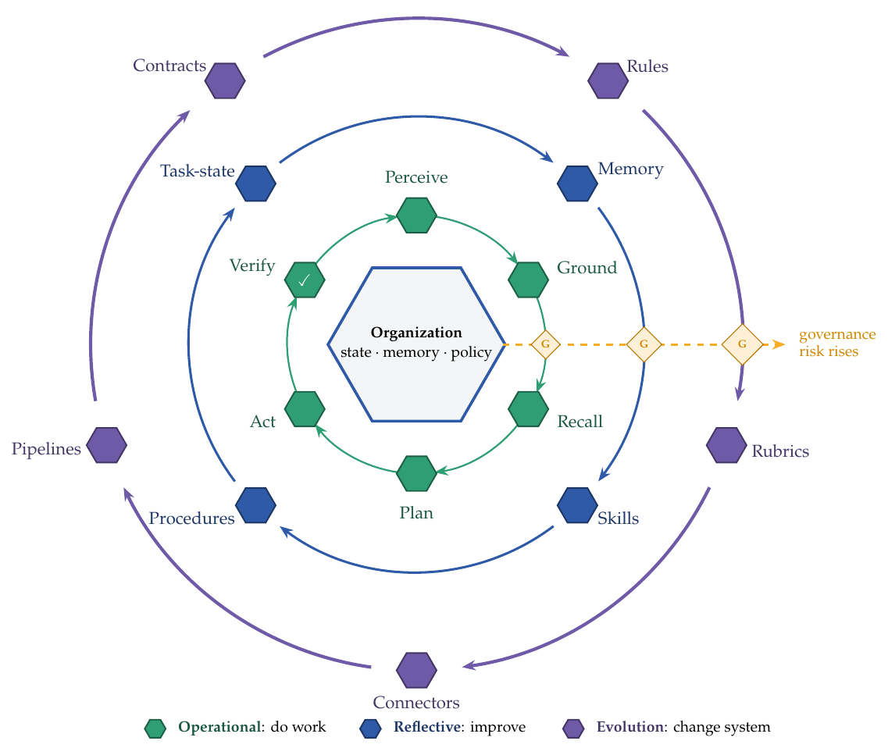
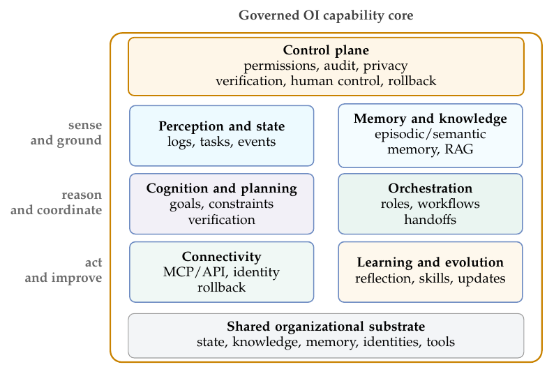

近年来，人工智能的进步大多是在模型层或应用层上被衡量的。然而，一旦这些 AI 能力进入企业、政府、医院、实验室等真实组织，外围的组织本身就会成为瓶颈。一个能力很强的模型，并不会自动知晓本地知识、惯例、权限边界、责任结构、任务历史以及异构的系统。组织智能（Organizational Intelligence, OI）是一种系统级能力，它在 AI 智能体被嵌入复杂组织、受其约束、并在治理条件下能够驱动该组织进行反思与演化时涌现出来。它把人、岗位、流程、知识、数据、系统、权限与责任，同那些能够感知、接地、记忆、规划、执行、验证、协作与学习的智能体耦合在一起。
评价与治理 Agentic AI（能自主规划、调用工具并采取行动的 AI）的恰当单元，不是孤立的模型或任务，而是组织：Agentic AI 最深远的影响，或许不在于哪些任务被自动化，而在于智能如何在一个组织内部被组织、被治理、被持续改进。这一术语在社会学、管理学、信息系统、集体智能与多智能体系统等领域有着悠久的脉络；本文的贡献是面向大语言模型（LLM）智能体时代的一次综合，而非首创权的主张。本文把组织建模为一个动态的信息处理与决策网络，提出一个由嵌套的运行环、反思环与演化环构成的能力循环模型，将这些能力映射到实现组件，并梳理其对组织形态与人机共生的影响。在此基础上，本文进一步提出如何评价组织智能——通过能力信号，以及一个 L0–L5 的成熟度模型，其更高层级所要求的不只是更广的自主性，更是更强的治理准入条件：最小授权、审计、独立验证、人类控制与受控演化。
引言
人工智能的发展，可以读作一场关于「智能单元」（unit of intelligence）的累积性迁移：从模型级能力，到应用级能力，再到组织级能力。这并不意味着要离开模型——在这三个单元上，底层智能仍然可能由一次或多次模型调用来提供；真正改变的，是围绕模型的语境、基础设施与治理。这是一种分析性的框架，而不是成熟度刻度，也不是自治程度的分类法：它追踪的是 AI 能力被组织和评估的「单元」。
第一个单元是模型级能力。深度神经网络，以及晚近的大语言模型（large language models, LLMs），在语言理解、代码生成、多模态识别、数学推理等被基准化的任务上变得越来越强。思维链（Chain-of-Thought）提示让人们看到：在合适的提示条件下，足够强的模型可以被引出多步推理（Wei et al., 2022）。在这里，智能主要被当作模型在一个相对单薄的评测设置下的属性：模型有多大、训练得有多广、在标准任务上表现得有多好。
第二个单元是应用级能力。通用模型一旦好用，就被封装进各类应用场景：助手、副驾驶（copilot）、聊天界面、客服智能体、写作工具、编程工具。随后，工具调用与智能体式提示又把这些应用从「单轮应答者」变成了能够规划、调用工具、多步行动的系统（Xi et al., 2023）：能编辑并运行真实软件仓库的编程智能体、通过用户界面操作其他应用的「计算机操作」智能体，以及部署在各类办公套件和管理平台上的企业副驾驶与自主智能体。此时，智能被看作用户—任务语境中的一个可调用服务：在这个任务里，这个应用能为这个用户做什么？
第三个单元，也是本文的核心关切，是组织级能力。当大量彼此孤立的 AI 应用进入同一家企业、医院、大学、实验室或公共机构，一个不同的问题随之浮现：这些局部能力，能否汇聚成整个组织的智能？一个 AI 系统能否不只为一次提示、一个用户服务，而是在一个真实组织内部持续工作——理解本地知识与惯例、记住长周期的事项、协同异构系统、尊重权限与责任、并从执行反馈中改进？核心瓶颈不只在于一个智能体能否推理、能否调用工具，而在于：恰当的信息、语境、权限、记忆和反馈，能否在恰当的时间抵达恰当的人类或人工决策节点，被转化为合法的行动，并作为组织学习返回。多智能体与工作流系统是一座重要的桥梁，但只有当它们接入共享的组织状态、记忆、权限、责任与跨流程反馈时，才真正进入组织级。在这个单元上，大量能力其实并不在模型调用本身，而在那套执行底座里：它提供语境、工具、记忆、工作流策略、校验关卡、人工检查点和审计轨迹。
能够在第三个单元上涌现出来的能力，就是组织智能（Organizational Intelligence, OI）。在本文的用法里，OI 不是某个单一的模型、产品或框架。它是当模型能力与 AI 智能体被嵌入一个复杂组织、并被要求在该组织的知识、岗位、流程、系统、权限与责任机制下运转时，所形成的系统级能力。OI 把分析单元从「模型在某个任务上的表现」转移到「作为社会—技术系统的组织」。问题不再只是一个智能体能否完成任务，而是整个组织在感知、决策、行动、学习和自我治理上是否变得更好。这一区分至关重要：一个部署了许多智能体、工具或自动化工作流的系统，如果缺少共享的任务状态、受治理的记忆、带权限的行动、可问责的归属，以及那种「改进组织而不只是改进下一条回复」的反馈回路，那它仍然只是一堆单点应用的集合。OI 由此成为一个设计与评估的对象：它追问的是，在 AI 能力可以被归因于整个组织之前，必须先具备什么。
组织鸿沟
对 OI 的需求，源自一种反复出现的组织失灵：强大的局部智能并不保证组织智能。在组织中，能力取决于恰当的信息、语境、权限、记忆与反馈，能否在恰当的时间抵达恰当的决策与执行节点。因此，许多 AI 部署的失败，并不单纯是模型推理的失败，而是组织信息流的失败。组织鸿沟至少包含五个组成部分。
知识流断裂。组织运转依赖私有的、情境化的知识——本地政策、历史项目决策、临床惯例、制造参数、未被记录的做法，以及人际语境——这些都是一个在公开数据上训练出来的通用模型所不具备的。用 Nonaka 与 Takeuchi（1995）的说法，这类知识有很大一部分是隐性的，而非显性的。问题不只在于模型缺少本地知识，更在于相关知识分散在人、文档、系统、例行流程和隐性惯例之中，往往无法抵达真正需要它的那个决策点。
记忆连续性断裂。组织工作往往横跨数周、数月乃至数年。如果没有持久的、可检索的、可治理的长期记忆，组织就无法让承诺、阻塞点、证据和决策在多个工作片段之间保持可用；AI 也就仍然停留在「片段式」，而没有成为连续工作的一部分。
决策—行动断裂。组织行动并不只是工具调用或文本生成。它包括决定下一步该做什么、设定优先级、分配注意力与资源、在不同岗位之间分派工作、协同人与系统、授权做出承诺、改变组织状态。这些行动依赖知识，但并不能被还原为知识检索：它们需要合法的渠道，让决策成为承诺，让承诺成为可问责的执行。工具与系统调用只是这道断裂的一个表层。更深层的问题是，一个 AI 系统能否参与到组织那套受治理的「决策—承诺—执行—修订」过程之中。
反馈—学习断裂。只有当结果能够回流进记忆、例行流程、技能和修订后的规则，组织才会学习。然而，已部署的模型权重往往是静态的，局部任务反馈也很容易丢失。一旦成功、失败、评审和异常无法转化为更新后的记忆、可复用的技能、本地操作手册，以及对规则或模型的受治理改进，AI 就仍然只是一个加速器，而非会学习的组织参与者。
权限—问责断裂。组织中的信息与行动都沿着权限关系流动。每一个有后果的行动，都附着于一份权限、一个岗位和一份责任。而一个模型在默认情况下没有职位、没有权限边界、也没有问责关系。因此 OI 需要权限、审计轨迹，以及明确的人—AI 责任边界。
这些断裂合在一起，构成了所谓的组织鸿沟：它是「强大的单点智能」与「组织级能力」之间的距离——后者凭借其信息流、决策渠道、记忆、反馈和问责结构，能够在真实的组织约束之内连贯地工作。
定义与范围
正式地说：
组织智能（OI）是一种系统级的智能能力，它涌现于模型能力与 AI 智能体从基准测试和单点应用走向复杂组织语境之时。它的对象不是某个孤立的任务或用户，而是一个由人、岗位、流程、知识、数据、软件系统、权限与责任机制所构成的动态组织。它的目标，是让 AI 系统能够持续感知任务状态、把相关信息路由到恰当的决策节点、把决策接地于组织知识、形成长期记忆、在组织目标与约束之下进行规划与决策、把决策转化为跨人与系统的授权行动、在行动落定之前依据任务的验收标准对结果进行校验、与人类及其他智能体协作，并在治理约束之下从执行反馈中改进。
本文在三种相互关联的意义上使用「OI」这个词：作为一种现象或能力（AI 智能体嵌入组织那些受治理的流程之后，组织所具有的系统级智能）；作为一个系统（一种具体的技术实现）；以及作为一个层级（成熟度模型所评估的对象）。这种能力由 OI 系统来实现，但并不等同于系统本身。多数时候靠语境即可消歧，只有在意义关键之处，本文才会显式标注究竟是哪一层含义。
关于这个定义，有三点尤为重要。其一，OI 是智能的一种组织形态，而不是一项技术；其二，它的分析单元是组织，而不是模型；其三，它的终极关切是重构，因为一旦智能能够以组织化的形式被生产、存储、调用、协同和改进，岗位、工作流、边界，乃至生产关系，就都变得可被重新设计。其新意不在于「OI」这个说法，也不在于「组织智能体」这一笼统想法，而在于这样一个主张：LLM 智能体使组织本身成为记忆、行动、评估与治理必须被设计的那个单元。本文沿着这条主线展开：把组织建模为一个动态的信息—决策网络，对其状态加以形式化，再拆解那些在治理之下维持并改进该状态的、层层嵌套的反馈回路。
主要贡献
本文的贡献有五个方面。
- 论证：当 Agentic AI 在受治理的组织流程中横跨记忆、决策—行动、评估与治理，恰当的分析单元便是组织，而非孤立的模型或任务。
- 将组织刻画为一张信息处理与决策网络——由人、岗位、流程、知识、数据、软件系统、权限与责任这八个相互耦合的要素，共同构成组织状态。
- 把任务感知、组织接地、长期记忆、工具与系统执行、规划与决策、验证、受控的学习与演化、人机协同这八项能力，映射到运行、反思、演化三层回路，并厘清每项能力分属哪一层回路、对应何种治理层级。
- 再把这些能力对应到感知、连接、记忆与知识、认知、协同编排、学习与治理等实现组件，并与近期关于智能体执行框架（agentic harness）与执行脚手架的工作相衔接。
- 由此推演组织重构的后果——自动化、组织边界、生产关系、人机共生、自我改进的治理、评估、成熟度层级，以及尚待展开的研究。
本文意在贡献的，不是又一份智能体架构的清单，而是一个关于「Agentic AI 必须在哪个单元上被设计与评估」的立场与框架论证。
研究对象：作为动态系统的组织
组织智能（OI）需要一个精确的分析对象。这里所说的「组织」，既不是抽象的群体，也不是一张静态的组织架构图，而是一个动态的社会-技术系统：其人、岗位、流程、知识、数据、软件系统、权限与责任机制，共同决定了它能感知什么、能决策什么、能做什么、能记住什么，以及能在多大程度上自我改进。
组织作为信息处理系统
组织的信息处理视角（information-processing view），是本文论证的脊柱：本节其余部分正是在这一视角下，把组织建模为一个状态对象和一张信息与决策网络。它的前提是，组织本身就是信息处理与决策系统。March 与 Simon（1958）把组织描述为有限理性（bounded rationality）的系统——决策受到注意力、惯例（routines）和有限信息的约束。Cyert 与 March（1963）进一步强调了标准操作程序（SOP）、问题导向的局部搜索（problemistic search）、联盟（coalitions）和组织松弛（organizational slack）。这些概念都能自然对应到 AI 系统上：智能体的工作流编码了惯例，反应式（reactive）的智能体行为类似于问题导向的局部搜索，冗余与回滚路径则相当于工程意义上的松弛。
Galbraith（1974）给出了组织设计中经典的信息处理视角：核心的设计任务，是让任务不确定性所产生的信息处理需求，与组织的信息处理能力相匹配。这也为 OI 提供了核心的工程学解释——AI 部署之所以在组织层面才真正产生意义，是因为它改变了信息获取、路由、解读、授权、执行以及作为反馈返回的方式。更强的模型调用提升了局部的处理能力；而 OI 要求重新设计组织的信息流，把这种局部能力连接到合法的决策与行动上。
组织状态：八要素归一为一个对象
八要素不应被读成一张无序的清单。它们构成的是单一的组织状态（organizational state）。设组织在时刻 t 的状态为
其中 H 是人的集合，R 是岗位与职位的集合，P 是流程的集合，Kt 是组织知识，Dt 是组织数据，S 是软件系统，A 是权限关系，G 是责任与治理机制。Kt 与 Dt 被显式地标上了时间下标；其余要素在短期内可能更为稳定，但在更长的时间尺度上同样会发生变化。
这套记号是一种分析性的分解，而不是一套存储模式（storage schema）。Dt 是证据与痕迹层：交易记录、日志、消息、表单、传感器读数，以及其他可以据以推断组织状态某些方面的数据。Ot 则是这些痕迹所描述的组织层面的对象——人、权威、惯例、知识、系统、权限与责任关系，正是它们真实地约束着未来的工作。在一个完全被仪表化、采用事件溯源（event-sourced）的系统里，Dt 也许足以重建 Ot 的很大一部分；但在寻常组织里，它始终是局部的、滞后的、含糊的，并且受权限约束。这一区分带来了一个治理上的后果，本文后续会一直坚持：一条审计日志是状态发生迁移的证据，但在它被审阅并接受之前，它仍然是临时性的。系统可以自动更新它自己的工作记录，但要把其中任何一项提升为权威的、共享的组织知识 Kt，则是一个独立的、经过审阅的动作，而不是一次自动写入。
下表给出了每个分量的解释。
| 状态分量 | 在 OI 中的角色 |
|---|---|
| H：人 | 隐性知识（tacit knowledge）的载体、价值判断的来源、协作者、异常处理者，以及最终的责任主体。 |
| R：岗位与职位 | 责任、权威与预期胜任力的结构化集合；它们锚定了归属与授权决策，尤其是在「路由并授权」这一步——工作经由恰当的渠道流转，并由此确立责任归属。 |
| P：流程 | 工作被标准化执行的方式；它既是效率的来源，也可能成为僵化的潜在来源。 |
| Kt：知识 | 显性与隐性的组织认知；正是通用 AI 所缺乏的那种本地语境（local context）。 |
| Dt：数据 | 用于推断、审计和更新组织状态的记录痕迹与证据；除非假设了完全的数字可观测性，否则它并不等同于状态本身。 |
| S：软件系统 | 组织的数字器官：ERP、CRM、OA 套件、代码仓库、数据库、工单系统与协作平台。 |
| A：权限 | 规定谁可以查看、修改、批准或执行什么的规则。 |
| G：责任与治理 | 规定谁对后果负责、行动如何被追溯，以及高风险变更如何被授权的结构。 |
表：作为组织状态 Ot 各分量的八个相互耦合的要素。
这些要素是相互定义的。岗位绑定了人、权限与责任；流程连接了岗位、知识与系统；数据在系统中流动，并可能转化为知识；权限与责任则横切于一切行动。一个只优化知识检索却无视权限的系统，或者一个调用工具却没有责任归属的系统，在本文所用的意义上都达不到 OI——这一要求会被精确地表述为一种治理准入条件。因此，状态向量与八要素表，其实是同一个分析对象的两种记号。任何具体实现，所维护的都是该状态的一个局部的、受权限约束的、不断演化的表征：任务状态、被选取的记忆条目、审计记录与行动证据，共同构成了决策网络得以运行的基底。
信息、决策与变化的动力学
一旦把状态对象看作一张信息处理与决策网络，它就变得可操作了——这正是对前述信息处理传统的组织层面解读。网络的节点是决策与执行单元：人、岗位、AI 智能体与软件系统；边是信息流与控制流：上报、触发、批准、委派、上升（escalation）、工具调用与反馈；节点状态则包括知识、记忆、任务、权威、当前承诺，以及尚未解决的异常。
在这一视角下，OI 体现于网络处理信息、作出决策时的质量、速度、稳健性与适应性。Galbraith（1974）把这一设计挑战说得很明白：组织必须让信息处理能力与任务不确定性相匹配。AI 加入了一批强大的节点；而 OI 要求设计好这些节点之间的连接，使它们接收到正确的状态、经由正确的渠道行动，并始终保持可治理。
下图概括了主要的动力学。任务动力学是组织事务的生命周期。设 Tt 为时刻 t 处于活动状态的事务集合；每一项事务都带有一个状态、一个目标、若干约束、证据、依赖关系与一个负责人，并在被创建、路由、阻塞、上升、完成、重新打开和审计的过程中穿行于网络之中。状态动力学是那些持续漂移的条件，首先是知识 Kt 与数据 Dt——从库存与项目状态，到人员负荷、系统健康度与客户情况。事件动力学是那些要求响应的触发器：一笔到账的款项、一次审批、一个阈值被越过，或一起服务事故。反馈动力学则闭合了回路：经过核验的结果会更新共享状态、经过策展的记忆条目、本地操作手册（playbooks）、可复用的技能，并且在治理之下，更新系统自身的变更。

分析性的推论。下文把这一表述当作一组约束来使用，而不仅仅是记号。第一，一项能力只有在它读取或更新了一个受治理的 Ot 表征——即任务状态、记忆、权限与证据的一份局部的、可审计的快照——时，才算得上是组织性的，而不是仅仅产出一个孤立的答案。第二，一个行动只有在它经由一个经过授权的渠道（由 A 与 G 决定）流转、在 Dt 中留下可审计的证据，并被一个核验关卡所接受时，才算得上是一次组织状态迁移。第三，学习与演化按它们所改变的对象加以区分：对记忆条目、任务状态表征、技能与操作手册的更新，是既有规则之下的反思性学习（reflective learning）；而对流程、权威边界、岗位接口、校验关卡或系统连接器的变更，则改变了组织未来的运行条件，因而属于演化回路。这三条约束，构成了本文后续展开的能力图谱、嵌套回路（nested-loop）治理模型、重构论证与成熟度等级的脊柱。
思想来源与理论根基
组织智能这一研究对象并非凭空出现，而是根植于一条更长的学术传统。我们用五块基石界定组织智能（OI）的边界——前三块来自组织学与管理学，后两块来自计算机科学——最后再单独用一节，把其中真正新的东西与并不新的东西区分开来。
大模型之前的组织智能
「组织智能（organizational intelligence）」这个说法本身就有相当长的历史。Wilensky（1967）在其专著《Organizational Intelligence: Knowledge and Policy in Government and Industry》的标题中就用了这个词，把「智能」视为组织获取、加工、解释并传递知识、进而服务于政策制定与决策的过程。其中的核心洞见至今依然成立：许多失败并非个体智力的失败，而是信息流动、专业分工、层级结构与权力关系的失败——是它们让正确的信息无法在正确的时刻抵达正确的决策节点。
随后的管理学与信息系统研究让这一构想更具可操作性。Huber（1990）分析了先进信息技术如何改变组织设计、组织智能与决策。Matsuda（1992）把组织智能形式化为人类智能与机器智能的协调，这是对「人机共生」问题一次早期而直接的预见。Glynn（1996）把个体智能、组织智能与创新联系起来。Allee（1997）把知识演化诠释为组织智能的一种扩张。Mendelson 与 Ziegler（1999）让「组织 IQ」一词广为流传。Halal（2002）把组织智能视为比知识管理更宽广的框架。Albrecht（2003）则提出了一个用于诊断组织智能的七维管理框架。
近期的人机协作研究也在使用相邻的语汇。例如 Kolbjornsrud（2024）把「智能组织」刻画为一个面向人机协作的设计问题，并明确地把组织智能看作可以由人与 AI 的交互来增强的能力。这说明 AI 时代的组织智能语言其实早已在流通；我们之后所论证的「新」，并不在这个说法本身，而在分析单元，以及把治理作为准入条件这一约束——而 Kolbjornsrud 那套以「岗位与工作设计」为中心的框架，并未把这些约束固定下来。
组织知识、学习与记忆
知识与学习理论解释了为什么组织智能不能被还原为自动化。Senge（1990）把「学习型组织」视为长期竞争力的来源。Nonaka 与 Takeuchi（1995）区分了隐性知识与显性知识，并提出了 SECI 螺旋：社会化（Socialization）、外化（Externalization）、组合（Combination）与内化（Internalization）。组织智能要追问的是：AI 能否参与这条螺旋——把会议、消息、代码与工单中的隐性实践外化为可检索的知识，又把显性的规范内化为可执行的行为。但知识转化还不够，学习本身也必须被治理。
Argyris 与 Schon（1978）区分了单环学习与双环学习。单环学习是在既有目标之下纠正偏差；双环学习则质疑目标与规范本身。智能体运行时的自我改进方法支持的是单环改进：Self-Refine（Madaan et al., 2023）在单个任务内部修订输出，Reflexion（Shinn et al., 2023）则把言语化的教训跨多个回合携带——但按 Argyris 与 Schon（1978）的意义，两者都是在固定目标之下纠正行为。允许 AI 系统去修订组织的目标或规则，则更接近双环学习，并由此引入治理风险。
March（1991）把组织学习刻画为探索与利用之间的张力。组织智能系统也面临同样的张力：只遵循既有 SOP 的系统高效却僵化，不断试验的系统则灵活却冒险。Walsh 与 Ungson（1991）把组织记忆定义为组织历史在多个「留存箱」中的存储与检索。MemGPT（Packer et al., 2023）、Generative Agents（Park et al., 2023）与 MemoryBank（Zhong et al., 2024）等现代智能体记忆系统，可以被解读为这类留存箱的部分技术实现。
边界、治理与集体智能
交易成本经济学解释了为什么组织智能能够影响组织边界。Coase（1937）追问：当市场已通过价格来协调时，企业为何还会存在；Williamson（1975）则通过资产专用性、不确定性与交易频率来解释治理结构的选择。如果 AI 对内部协调成本与市场交易成本的影响是不对称的，它就可能改变企业「自制还是外购」的边界。
集体智能研究提供了另一块不同的根基。Surowiecki（2004）强调多样性、独立性与去中心化的聚合。Woolley et al.（2010）发现了人类群体中存在「集体智能因子」的证据——它更多地由社会敏感度与均衡参与所驱动，而非由最高的个体 IQ 所驱动。Malone（2018）把组织描述为由人与计算机共同构成的「超级心智（superminds）」。组织智能继承了这一核心教训：一个集体的智能取决于连接与协调，而不仅仅取决于个体成员的强弱。这一原则直接延续到了面向组织的多智能体系统传统之中——当人工智能体成为集体的一部分时，这一传统要追问的正是：该如何设计这种协调。
面向组织的多智能体系统
对人工智能体进行「组织化」，本身就是计算机科学中一项大模型出现之前的传统（Wooldridge, 2009）。面向组织的多智能体系统（MAS）文献为「被编入岗位、规范与依赖关系的智能体群体」建立了明确的模型：Agent-Group-Role 元模型及其组织学解读（Ferber and Gutknecht, 1998；Ferber et al., 2004）、作为组织模型的 MOISE（Hannoun et al., 2000）、从层级到联盟、团队、市场与矩阵等各类范式的综述（Horling and Lesser, 2004），以及把多智能体架构视为组织结构来处理的研究（Kolp et al., 2006；Dignum, 2009）。
大模型智能体带来的改变，在于认知基底。早期智能体往往是符号式的、受规则约束的，而大模型智能体具备语言理解、工具调用、记忆与广泛的任务通用性。CAMEL（Li et al., 2023）、MetaGPT（Hong et al., 2024）、ChatDev（Qian et al., 2024）、AutoGen（Wu et al., 2024）与 AgentVerse（Chen et al., 2024）等当代多智能体框架，正是在一个远为丰富的智能体基底之上，重新激活了这些组织学构想（综述可参见 Guo et al., 2024）。
智能体执行框架与自我改进的脚手架
近期的智能体研究越来越明确地把模型之外的执行层显性化。Pan et al.（2026）把这一层称为自然语言智能体执行框架（natural-language agent harness）：一个环绕在模型外部的系统，它通过指令、工具、记忆、工件、控制流与评估，把一次次模型调用组织成任务。代码本身也可以充当智能体执行框架，为智能体提供一个可执行的基底，用于推理、行动、环境交互、验证与工作流编排（Ning et al., 2026）。Lin et al.（2026）进一步把「执行框架工程」刻画为一个由可观测性驱动的过程：其中提示词、工具、中间件、记忆与评估钩子会被自动修订，以提升编程智能体的表现。
这对组织智能的意义十分直接：智能体的能力不仅取决于模型权重或提示词，还取决于环绕其外的脚手架——正是它决定了模型能看到什么、能调用哪些工具、能修改哪些工件、如何检测失败、如何留存改进。多智能体执行框架的研究让这一组织学类比变得更加清晰：Liu et al.（2026）为漏洞发现任务合成了岗位分配、工具配额、通信拓扑与协调协议。这些恰恰对应着组织中的岗位、权限边界、通信渠道与任务分配。
但对组织智能而言，执行框架层只是一个起点。一个执行框架可以协调模型调用、工具、记忆与验证，但组织智能还要求把这个执行框架嵌入真实的岗位、知识、激励、法律义务、人机共生与责任机制之中。同样地，AI 系统可能改进其自身开发循环的某些环节——这并不是组织智能的定义，而是组织智能要面对的一个治理问题。Anthropic 的产业分析描述了当前从聊天机器人到编程智能体、再到自主智能体的演进，同时明确地把「完全的递归式自我改进」视为尚未实现、也并非必然的事（Anthropic, 2026）。组织智能应当把自我改进当作受治理的学习与演化来对待，而不是当成一个被预设好的终点。
什么是新的，什么不是
本文的「新颖性」主张是经过刻意限定的。我们并不把组织智能当作一个新标签来呈现，也不把「智能体的组织」当作一个新的设计问题来呈现。我们真正主张的是：大模型智能体让一个不同的单元变得空前可行、也空前紧迫——组织本身成为了那个对象，其记忆、行动、评估与治理必须被一并设计。
「组织智能」这一说法早已出现在 Wilensky 关于政府与产业中知识与政策的论述里；后来的信息系统与管理学研究又发展出一系列相关主张，讨论信息技术、人机协调、知识管理与组织设计如何影响集体智能（Wilensky, 1967；Huber, 1990；Matsuda, 1992；Halal, 2002；Albrecht, 2003）。计算机科学则补上了另一条大模型之前的谱系：面向组织的多智能体系统把岗位、规范、群组、依赖关系与通信结构当作头等的设计对象来处理，而近期关于人机协作与智能体执行框架的研究，则让「协作」与「模型之外的脚手架」在技术上变得显性（Kolbjornsrud, 2024）。即便是「自我改进」也不是一个新的终点；它早已出现在关于超智能（ultraintelligence）与超级智能（superintelligence）的争论之中（Good, 1966；Bostrom, 2014）。
因此，本文并不主张自己在概念上优先于这些传统，我们的主张要狭窄得多：大模型智能体让「把组织当作 AI 系统的设计与评估单元」这件事变得可行，并且越来越成为必需。在这个单元里，记忆不只是上下文长度，行动不只是工具调用，协作不只是多智能体之间的消息传递，改进也不只是模型更新——它们都是组织功能，必须与岗位、流程、权限、可问责性与反馈连接起来。
有两种反对意见值得直接回应。第一种是说，这套综合不过是增量式的：把旧的组织理论重新贴标签，盖在常规的企业 AI 工程之上罢了。但本框架承诺了一系列设计约束与可证伪的规则，而这些是它的任何单个组成部分都无法单独提供的：
- 治理作为一种准入条件，它为成熟度设定上限，而不是一个可以与能力相互权衡的分数；
- 在「自动记忆更新」与「晋升为共享的组织知识」之间设立一条经过审查的边界；
- 按风险画像把运行循环、反思循环与演化循环分离开来；
- 以及一份面向组织级基准测试的具体需求清单。
每一项承诺都可以对照真实部署的系统来核验，而且每一项都可能失败。单纯的「重新贴标签」是提供不了这种检验的。
第二种反对意见是说，组织智能不过是把「Agentic AI」或「数字劳动力」之类的产业概念改了个名，或者重述了一个早已在别处被命名过的能力里程碑——其中最直接的，就是 OpenAI 据报道用来追踪通往 AGI 进展的五级框架，其最高一级「Organizations（组织）」被描述为「能够完成一整个组织工作的 AI」（Metz, 2024）。这些提法命名的是产品野心或能力前沿；而组织智能固定下来的，是一个分析单元（组织）、一组构成性约束（八要素）、一个评估对象（治理准入条件下的成熟度），以及能力与治理的一种必需的协同演化。这种对比，在标签发生正面碰撞之处显得最为尖锐：五级框架的读法把「组织」放在单个系统能力阶梯的顶端——即能够替代完成一个组织工作的 AI；而组织智能则把组织视为人类智能与 AI 智能必须被组织并被治理的那个单元，把治理当作准入条件而非更高的能力层级，并且是面向增强、而非以替代为终点的。一个 Agentic AI 的部署，或者一个跨过了上述能力门槛的系统，都可以拿组织智能的标准来评估；反过来则不成立。
本文所提供的这套综合，把组织智能界定为真实组织的一种能力：在这样的组织里，具备认知、记忆、工具调用、协作、运行时学习与执行脚手架的大模型智能体，嵌入了组织生活的八要素之中。这种整合的用意，是给出一个面向研究与系统设计的框架，而不是一项关于概念优先权的主张。
能力与反馈循环
组织状态与决策网络说明了组织智能（OI）作用于什么；接下来的问题是什么在行动。这个行动系统就是 OI 系统本身：嵌入在组织状态 Ot 中的人类智能体与 AI 智能体，再加上三个共享的工作部件。记忆层并不是作为一个单独的形式化状态变量引入的，而是系统可复用、受治理、可检索的对过往轨迹、决策、案例与技能的组织，至于 Dt，指的是更宽泛的已记录证据层。策略则是路由规则、适用程序，以及在采取行动前规定工作可以怎样完成、必须先检查什么的验证与上报闸门。审计日志是一条只追加、不可改写的记录，记下做了什么、由谁来做、依据什么证据。这一切都运行在所处状态的权限 A 与责任规则 G 之内。审计日志本身归入 Dt，支撑可问责性与日后的复盘重建，但它并不就是被审计的那个组织变更。
三层嵌套循环
OI 系统先跑一轮组织工作的循环，再用两个更慢的循环把这一轮包裹起来。第一个循环在当前系统内部学习；第二个循环改变未来工作运行的条件。这三层循环是本节的脊柱：它们区分了「闭合工作循环」「在既有规则下改进工作」与「改变制定这些规则的系统」三件事。绝大部分治理论证都落在这一区分上。

最内层循环是运营性的（这里的「运营」取其宽泛的组织含义，即感知、解读、决策与执行，而不仅是工具自动化）：它是组织决策与执行网络的一次完整推进，读取可观测的轨迹和一份对 Ot 的维护表征，据此生成对 Ot+1 中一个或多个组件的更新。这些是网络层面的功能，而不是某个智能体执行的步骤；不同的人、AI 智能体、软件系统与负责人可以参与循环的不同环节，而且大量事务并发推进。
- 感知与更新：从 Dt、S 与任务状态 Tt 中读取事件、消息、系统记录与人工输入，然后更新一份共享表征，刻画哪些事务正在进行、被阻塞、已交接或已解决。
- 解读：把每件事务与组织知识 Kt 及系统记忆层对齐，使信号在本地组织语境中被理解，而不是被当作泛化的任务描述。
- 路由与授权：把事务推送到合适的人工、智能体、系统或上报通道，并在组织要求处确立归属与权限。
- 研判与决策：综合本地知识、记忆、约束与目标，选择下一步该做什么，包括决定是行动、提问、暂缓、上报，还是改变计划。
- 提交与执行：在权限 A 之内，把决策转化为一项经授权的承诺、交接、系统操作或其他跨人员与系统的改变状态之举。
- 核验、审计与反馈：对照验收标准检查结果，记录谁基于什么证据做了什么，只有在变更通过所需闸门之后才接受该状态转移。
最后这一步才真正闭合了运营循环。一次没有任何东西去检查、记录或反馈的推进，是一次基于信任的行动，而不是一次组织状态转移。
单独运行时，这个循环不过是「多了几个步骤的自动化」。真正让它升格为组织智能的，是环绕在它周围的两个更慢的循环。反思循环在当前系统内部学习：它把结果转化为更好的记忆、可复用的技能、任务状态表征与本地行动手册。演化循环改变未来工作所依赖的系统：策略、正式程序、岗位接口、工具连接器、评测闸门，以及模型或运行支架（harness）的更新流水线。用 Argyris 与 Schon（1978）的话来说，反思循环大体上是在既有目标与规则下的单环学习，而演化循环则是那种目标或规则可以改变、且受治理的双环情形。这三层循环不仅在它们触及的对象上不同，也在「一个错误会传播多远」上不同，这正是值得把它们分开看待的原因。
| 循环 | 主要功能 | 治理条件 |
|---|---|---|
| 运营循环 | 感知组织信号、更新共享任务状态、解读本地语境、路由或授权工作、做出决策、提交经授权的行动，并在结果被接受为组织状态转移之前完成核验。 | 必须遵守身份、权限、审计、回滚、验证闸门与人类控制要求。 |
| 反思循环 | 在既有目标与规则下，把结果转化为更新后的记忆、可复用技能、本地行动手册与更好的任务状态表征。 | 需要溯源、对共享知识的评审、冲突处理与遗忘规则。 |
| 演化循环 | 改变策略、正式程序、岗位接口、工具连接器、评测闸门，或模型与运行支架的更新流水线。 | 需要更强的授权、版本管理、评测、分阶段灰度（金丝雀发布）、回滚，以及针对高风险变更的外部审计。 |
表：OI 系统中的三层嵌套反馈循环。
具体而言，反思循环依据观测到的结果，编辑记忆条目、可复用技能、本地行动手册与任务状态表征。这些更新只要还停留在系统的私有工作记录里，就可以自动化；可一旦把其中任何一项提升为组织共享、权威的知识 Kt+1，就是另一种带有组织后果的行为，应当经过评审，而不是悄无声息地发生。同理，反思循环可以调整本地默认值或提议某个程序变更，但改变正式备案的策略、验证闸门、岗位接口、连接器、评测标准或更新流水线，属于演化循环。三层循环背后真正的主张在于那个模式：一个循环离运营核心越远，错误传播得就越广、越难撤销，因此其治理门槛也随之抬高。这些外层循环是受治理的组织变更，而不是系统自行授予自己的自主权利。
从循环到能力
同样这三层循环，会展开成本节其余部分的能力图谱。运营循环需要感知、接地、路由与授权、规划与决策、工具执行与核验，但它们是组织网络的能力，而不是某个智能体内部的串行提示循环。路由与授权由协同编排组件连同岗位与权限状态（R、A）承担，而不是单列为一个能力子节。受控学习覆盖反思循环；受控演化覆盖对系统未来运行条件的更高风险改动。人机协同及其所需的治理，则横切这全部三层循环。下面这张能力表是总图谱，把每项能力与它的循环功能、实现组件、代表性方法及评测信号一一对齐。
| 能力 | 循环功能 | 实现组件 | 代表性技术路线 | 示例评测信号 |
|---|---|---|---|---|
| 持续任务感知 | 感知／更新 | 感知 | 事件流、状态追踪、主动触发、注意力调度。 | 感知覆盖率与时延。 |
| 组织知识接地 | 解读 | 记忆与知识 | RAG、知识图谱、私有知识库、SECI 外化。 | 接地保真度、抗幻觉能力。 |
| 长期记忆 | 语境 | 记忆与知识 | 记忆流、MemGPT、MemoryBank、技能库。 | 记忆复用率、长程一致性。 |
| 规划与决策 | 决策 | 认知与规划 | 规划—执行—观察—重规划循环、层级分解、组合式工作流规划。 | 任务完成度、计划质量、异常恢复。 |
| 工具与系统执行 | 提交 | 连接 | 工具调用、MCP、API 集成、事务与回滚。 | 工具调用成功率、回滚正确性。 |
| 核验与检查 | 核验 | 认知；治理闸门 | LLM-as-judge、评分量表与测试闸门、自一致性、制单—复核分离。 | 检查的精确率与召回率、误接受率；对有后果的提交需独立（非作者本人）核验。 |
| 受控学习与演化 | 反思／演化 | 学习与演化 | Reflexion、Self-Refine、技能固化、本地行动手册更新、运行支架或策略修订、受控 RLHF 或宪法更新。 | 重复任务的学习曲线；变更评测与回滚结果。 |
| 人机协同 | 横切 | 协同编排；治理控制平面 | 多智能体编排、协同协议、上报路径、归属锚点、人类控制点。 | 协作可靠性、上报精确率；以权限违规与审计完整性作为准入条件。 |
表：OI 反馈系统的能力视图。该表同时充当结构图谱，把本节各项能力与实现组件及评测信号连接起来。
持续任务感知
持续任务感知是运营循环的感知与更新功能：从 Dt、S 与任务状态 Tt 中读取轨迹，并维护一份对 Ot 的共享表征。难点在持续，不在检索。真实组织从不安静：事件——消息、工单、日志、审批、事故与客户互动——持续不断地涌入。被问到时给出答案是容易的情形；真正要紧的是，在没有人发问时，仍能追踪每件事务进展到哪一步。
由此引出三项要求。其一，系统必须由组织里实际发生的事情触发，而不只由用户的提示触发。其二，要为每项任务保持一份结构化、可查询的台账，让任何智能体或个人都能看到事务进展到哪、卡在何处、由谁负责、有何证据支撑。其三，由于信号总是多于可用来处理它们的注意力，系统还须调度这份注意力，把稀缺的算力与人工评审花在后果最重的状态上。
组织知识接地
接地是运营循环的解读功能：它把每件事务与组织知识 Kt 对齐，使事件与任务在本地语境中被读解，而不是被当作泛化描述。检索增强生成（RAG）（Lewis et al., 2020）仍是基线，但智能体场景让检索变得更迭代：智能体可以规划检索什么、修订查询、批判证据，并跨多步组装语境，正如 Self-RAG 式的自适应检索与批判（Asai et al., 2024）以及智能体化 RAG 综述（Singh et al., 2025）所强调的。图结构检索又加上一层，它把实体、关系与社区摘要组织起来，而不是把知识当作扁平的文档块（Edge et al., 2024）。企业检索基准让这一要求更加锋利：HERB 式任务要求跨文档、会议、聊天、代码仓库与 URL 组装证据，还要有能力识别出可用证据不足、从而拒绝硬凑答案（Choubey et al., 2025）。不过，组织接地比文档搜索宽得多。它包含按部门而异的定义、嵌入在消息与会议中的隐性实践、带版本的策略、岗位特定的规范，以及依权限而定的解读。
最难之处在于组织知识既依赖语境，又往往是私有的。同一个术语在不同组织里含义可能不同，同一条策略在不同单位里执行方式也可能不同。为此 OI 需要溯源、时效、权限标签、冲突消解，以及对知识更新的人工评审。
长期记忆
长期记忆只有在与相邻机制被区分开来时，才能为 OI 提供连续性。长上下文窗口是模型在一个回合（episode）中可用的运行时工作集；智能体长期记忆跨越该智能体的多个任务而持续存在；而组织记忆则是跨人员、智能体与系统共享并受治理的。它也不同于 Dt：数据说的是哪些轨迹被记录下来，而记忆说的是哪些内容被留存、索引、摘要、关联、赋予权限，并供未来工作使用。于是设计问题变成了一个分配问题：什么应放进当前窗口，什么应按需检索，什么应固化进某个智能体的持久记忆，什么应留作轨迹数据，什么应成为共享的组织状态，什么应被提升为权威知识。
长上下文扩展能扩大运行时工作集，但它本身并不创造长期记忆或组织记忆。LongRoPE（Ding et al., 2024）等方法使得把大得多的文档、代码库、转录稿或案例历史放进模型输入成为可能。然而对长上下文行为的评测显示，名义上窗口很大并不等于能可靠地用上所有相关信息：模型对上下文中不同位置的利用可能并不均匀（Liu et al., 2024），而且如果合成的长上下文测试只衡量简单检索、而非多跳追踪、聚合或在更长输入下的推理，就可能高估真实任务能力（Hsieh et al., 2024）。对 OI 而言，长上下文对会议转录稿、合同卷宗、病历档案或事故时间线这类有界的「整包」是有价值的，但它仍是一种回合级资源。
智能体记忆为运行时窗口与组织之间的那一层提供了构件，但这些构件只是分配问题的组成部分，并不构成一份「系统菜单」。分配与搬移由 MemGPT 在架构上确立、并由 Mem0 推向生产规模（Packer et al., 2023；Chhikara et al., 2025）；CoALA 区分了情景记忆、语义记忆与程序记忆的存储（Sumers et al., 2024）；检索、强化与遗忘则由 Generative Agents、MemoryBank 与 A-MEM 中的「近因—重要性—相关性」记忆流、遗忘机制与动态链接来处理（Park et al., 2023；Zhong et al., 2024；Xu et al., 2025）；而 Voyager 把可复用技能当作一种「能力的记忆」（Wang et al., 2024）。映射到 Ot 上，这些填充了工作集、智能体的持久记忆与技能库，但尚没有一个能提供 OI 所需的共享、带权限、可审计的组织级记忆。
OI 把这套技术栈延伸到组织级记忆，在那里，连续性的单元不再是单个智能体，而是一个受治理的组织。经验必须在不违反权限的前提下，跨智能体与人员共享。错误、矛盾与陈旧条目必须被发现并纠正。存储必须尊重隐私、留存期与被遗忘权，同时仍保留足够的溯源以供审计与问责。一份成熟的 OI 记忆同时是持久的、共享的、带权限的、可更新的、资源感知的与可审计的。
记忆分配与受维护的组织状态
记忆分配同时改变设计与评测，因为它决定了对 Ot 的受维护表征中，哪些部分被放进上下文窗口、按需检索、固化为记忆、留作轨迹数据 Dt，或被提升为权威知识 Kt。这里的组织状态回指八要素：它不是一个新对象，而是任务状态、所选轨迹、记忆条目、权限、溯源与行动证据在实现侧的受治理表征。OI 系统应当把长上下文、检索、显式记忆策略与持久状态表征结合起来，而不是把其中任何单一机制当作充分。它们还应记录某个智能体在给出某项建议或发起某次工具调用时所掌握的语境，因为日后的评审不仅取决于最终答案，还取决于产生该答案所依据的证据与记忆快照。
业界实践也在以一个从业者标签——公司大脑（company brain）——来认识同一边界：它是一层鲜活、互联的组织语境层，捕获决策、消息、代码、事故、工单与承诺，使人员与智能体能够基于共享语境行动（Falconer, 2026；SOTA Sync, 2026；Hornof, 2026）。这些是从业者与社区来源，而非经同行评审的研究，因此这一标签在此仅用作独立的旁证。架构层面的要点是：数据、文档、RAG 索引与工具访问本身并不充分，除非它们被组织进一份对 Ot 的受维护表征，带上溯源、权限、时效、关系与行动轨迹。这份表征是 OI 的记忆与状态底座；它支撑 OI，但不是系统的全部——系统还需要人机角色、规划、工具执行、反馈循环、治理与可问责性。
规划与决策
规划与决策是运营循环的研判与决策功能：组织工作很少是单步完成的，往往需要分解目标、排序行动、满足约束、处理不确定性，并在受阻时重规划。在智能体场景中，规划与其说是一次性地在中间想法上搜索，不如说是一个「规划—执行—观察—重规划」循环：系统分解目标，选择工具与人类检查点，观察每一步的结果，更新任务状态，并在假设落空时修订计划。近期的评测让这一转变更具体，它们着重考察组合式知识工作、真实的用户交互、策略约束、长程工具执行，以及类公司的数字任务，而非孤立的谜题求解（Boisvert et al., 2024；Yao et al., 2024；Li et al., 2025；Xu et al., 2024）。
组织层面的瓶颈在于长程可靠性、探索与利用的平衡，以及对约束的遵守。组织常常是在预算、截止期、合规规则、利益相关者冲突与权限边界之下寻求满意决策。EnterpriseArena 把这一规划需求摆到明面上，它在部分可观测性、硬预算、延迟效应与体制切换之下评测 CFO 式的资源配置（Han et al., 2026）。在 OI 的规模上，规划必须区分复用与探索、例行执行与上报，以及普通分解与那些需要正式规划或人工评审的案例。
工具与系统执行
工具与系统执行是运营循环的提交与执行功能，在权限 A 之内把经授权的决策转化为对 Ot 的改变。在最基础的层面，工具调用把 AI 从一个文本生成器变成一个行动者。早期工作确立了「推理—行动」范式与习得式 API 使用（Yao et al., 2023；Schick et al., 2023）；此后的智能体化转变，是从一次性的工具调用走向在众多真实系统上、在用户交互、工作流与策略约束之下进行长程、多步执行——这正是 τ-bench 与 Tool Decathlon 等当前基准所强调的（Yao et al., 2024；Li et al., 2025）。
然而在组织里，工具调用还必须满足额外约束。每次调用必须携带身份、授权、审计语境与回滚语义。一个能调用许多系统的模型是危险的，除非每次调用都对照最小授权被检查。模型上下文协议（Model Context Protocol, MCP）是一项有前景的标准化努力，因为它定义了一种可复用的方式，把 AI 系统连接到工具与数据源（Anthropic, 2024）。Agent2Agent（A2A）协议等互补的互操作性努力，针对的是智能体之间的通信，而非工具连接（Google, 2025）。但协议层面的连接性只是一个底座；生产级 OI 还需要认证、多租户权限、事务性行为、异常处理与安全加固。
核验与检查
行动不等于成功，所以运营循环以一次显式检查作结。其设计原则是分离：产生某个行动的组件，不应同时充当给它打分的组件，因为被要求评判自身输出的模型会表现出一种可测量的自我偏好偏差，从而系统性地高估自己（Zheng et al., 2023；Panickssery et al., 2024）。取而代之，由一个独立评估者对照一份显式、成文的「完成定义」为每一次推进设闸；授权对组织状态做出任何改变的，是这次检查，而不是行动者的自我汇报。Self-Refine 与 Reflexion 等自我批判方法对修订很有价值（Madaan et al., 2023；Shinn et al., 2023），但它们本身达不到这条标准，因为批判者与作者是同一个系统。
在组织里，核验是一道治理闸门，而不只是质量检查：它决定的不只是结果是否足够好，而是它能否提交进组织状态。例行、低风险的行动可以通过自动检查，而有后果的行动则需要更强的证据或人工评审，同样的「制单—复核」分离会在协同编排层再次出现。对改变状态的工作，检查应当审视可执行的后置条件与最终系统状态，而不只是一段转录稿或自然语言判断；Agent-Diff 朝这个方向迈进，它用状态差分（state-diff）契约来评测企业 API 任务（Pysklo et al., 2026）。真正要紧的信号是检查的精确率与召回率——尤其是误接受率——因为一个把坏工作放行的核验器，比没有核验器更糟。
受控学习与演化
把 OI 与静态自动化区分开来的，是受控学习与演化，但这两者并非同一种治理行为。反思式学习在当前目标与规则下改进行为：Reflexion 把言语化的自我反思存入记忆（Shinn et al., 2023），Self-Refine 批判并修订自身输出（Madaan et al., 2023），STaR 则从生成的推理依据中自举出推理能力（Zelikman et al., 2022）。受控演化改变行为策略或执行底座本身：InstructGPT 把基于反馈的对齐带到工业规模（Ouyang et al., 2022），Constitutional AI 则从成文原则出发驱动自我批判（Bai et al., 2022）。
这些方法运行在不同的时间尺度上。运行时反思与自我精修在不改变模型权重或正式策略的情况下改进记忆、技能与本地行动手册；对齐训练与宪法更新则以更低的频率、更高的治理成本改变模型行为。近期的运行支架工作把同一要点从模型输出延伸到执行底座本身：提示、工具、中间件、记忆、工作流策略、评测钩子与验证闸门都可以成为改进的对象（Pan et al., 2026；Ning et al., 2026；Lin et al., 2026）。OI 在日常改进上应主要依赖可治理的运行时反思，而把对运行支架策略、岗位接口、验证闸门或模型行为的改动，保留给受控演化流水线。
因此，受控演化比「改进任务能力」要宽。有些重要的变更是结构性的：移除流程步骤、合并或拆分岗位、改变审批路径、改动单位之间的接口、用共享状态通道替换一次人工交接，或为更低成本、更高吞吐重新设计某个流程。这类变更可能保持底层任务技能不变，却改变了 Ot 中的 R、P、S、A 或 G。它们属于演化循环，因为一个错误改变的是组织未来的运行条件，而不仅是当前任务。我们在论及组织重构时还会回到这些结构性影响。
治理之下的人机协同
协同能力要问的是：在不消解授权、可申诉性或可问责性的前提下，人类与众多 AI 智能体如何协同。
多智能体 LLM 框架已经把角色、工作流与通信协议编码进软件，它们的主要差别在于各自的侧重：MetaGPT 中的软件公司 SOP（Hong et al., 2024）、ChatDev 中的沟通式开发工作流（Qian et al., 2024）、CAMEL 中的角色扮演智能体社会（Li et al., 2023）、AutoGen 中可编程的智能体对话（Wu et al., 2024），以及 AgentVerse 中的涌现式协作（Chen et al., 2024）。在能力强得多的智能体之下，它们重新唤起了面向组织的多智能体系统（MAS）思想。用 Ot 的术语来说，它们规定了智能体节点之间的通信边，却大体上把权限 A、责任 G 与共享任务状态留作隐含；OI 协同则在这些拓扑之上补上带权限的权威、可问责的归属与共享状态。
人的一侧才是约束所在。一个系统可以拥有许多智能体，却仍然作为组织而失败——只要它把人的判断、隐性知识、可问责性或可申诉性晾在一边。近期的人在回路评测进一步表明，上报本身就是一种能力：当不确定性、风险或权限缺失值得这样做时，智能体应当求助，同时避免不必要的打扰（Trinh et al., 2026）。协作运行在一个由五项功能构成的治理控制平面之内——显式的价值观与红线、最小授权的运行时授权、不可篡改的审计与归属绑定、对高风险决策的强制人工评审，以及带版本、分阶段、可逆的变更。在这里，更窄的要求是：协作要保持可检视的角色、经校准的上报路径与可问责的承诺。
每当循环在很少监督的情况下运行，还有两种失败模式会悄然累积。我们称之为意图债，即一个循环被设立去做的事，与它逐渐漂移成在做的事之间不断扩大的鸿沟；以及理解债，即随着未经评审的输出不断交付，人们所流失的理解。两者都是组织性的，而不仅是技术性的。若不偿付，它们会把自主性变成治理本应防止的那种责任弥散。
实现组件
这八项能力——区别于八个状态要素，后者是系统所作用于的——描述的是一个 OI 系统必须做什么；而一个实现还必须说明它是由什么构成的。OI 能力核心置身于一个决策网络之内；下面的架构图把那个核心分解为六个实现组件，由它们来实现这些能力，并被一个由权限、审计、核验与人类治理构成的控制平面贯穿其中。该图把各项能力归拢到实现它们的组件里。如果说动态网络把组织建模为研究对象，那么这些组件实例化的是在这样一个网络内运行的 OI 能力核心。感知与状态把组织信号转化为被追踪的任务状态；记忆与知识持有可检索的经验、任务历史与对组织知识 Kt 的接地访问，使接地与回忆共享同一底座；连接通过带权限、可审计、回滚感知的工具与系统调用来执行行动；认知与规划承载规划与核验的推理一侧；协同编排协调人机角色、工作流与交接；学习与演化实现两个外层循环——对记忆、技能与行动手册的反思式学习，以及对运行支架、策略、闸门与模型更新流水线的受治理演化。

横切所有这些组件的，是一个控制平面：权限、审计、隐私、人类控制、核验与回滚。之所以把它画成一个控制平面，是因为这些约束必须在行动被授权、检查、提交并从中学习的地方就地强制执行；它们不能被下放给某个单一的下游合规模块。这种映射是有意为之的多对一：接地与记忆共享知识底座，而核验与人机协同则各自既作为核心能力出现、又作为控制平面条件出现。在 OI 中，检查与治理是能力的内在构成，而不是事后才栓上去的。
组织重构
组织智能（OI）的重要性，在于重塑组织形态，而不仅是提升任务效率。本节因此可视为八要素状态刻画与决策网络视角的一组「后果」。所谓重构，是指能力循环并非只完成更多任务；当作用范围足够大，它会改变组织状态 Ot = ⟨ H, R, P, Kt, Dt, S, A, G ⟩ 的一个或多个坐标：谁做什么、有哪些流程、知识与数据驻留在何处、哪些系统执行工作、谁获得授权，以及后果如何被治理。下文给出的论断是机制层面的假说，而非已成定论的经验结论。
从 RPA 到 APA
机器人流程自动化（Robotic Process Automation, RPA）在既有信息系统的界面层自动执行基于规则的操作（van der Aalst et al., 2018）。工作流重复且定义清晰时它运转良好；可一旦任务需要判断、重新规划或异常处理，就变得脆弱。智能体化流程自动化（Agentic Process Automation, APA）由 ProAgent 提出（Ye et al., 2023），用能在监督下规划、决策与自适应的 LLM 智能体，替换掉一部分固定规则。RPA 与 APA 是有用的流程级起点，但它们并不是 OI 的刻画。用八要素的记号来说，RPA 主要是通过既有的 S 来「脚本化」P 的一部分；APA 则在工作流内部加入了智能体认知，但往往把 R、A、G、共享记忆以及跨流程反馈留作隐含。而 OI 真正开始，是当这类自动化嵌入组织状态本身之时——任务状态得以共享、行动获得授权、结果会更新受治理的记忆或知识、更高风险的变更需经反思循环或演化循环，而不再停留于局部的工作流优化。
任务重构
自动化并不是简单地替代岗位。Acemoglu and Restrepo（2018, 2019）的「基于任务」框架区分了两种效应：一是位移效应（displacement effect），即自动化替代了原先由劳动力完成的任务；二是重置效应（reinstatement effect），即技术创造出新的任务。Acemoglu and Restrepo（2022）进一步把这两种效应之间的平衡与工资不平等联系起来。OI 应当在任务层面被分析，但不能把任务从组织中剥离出来：每个岗位都可以被分解为可被自动化、可被增强、可被重新设计或全新创造的任务，而每一项这样的变化都可能同时改变 H、R、P、A 与 G。
管理学研究也得出类似结论。Daugherty and Wilson（2018）描述了纯人类工作与纯机器工作之间一片「缺失的中间地带」——在这里，人类训练、解释并维系 AI，AI 则增强人的能力。Davenport and Kirby（2016）则梳理了工作者与自动化形成互补的若干策略。OI 为这片中间地带提供了技术底座：感知、记忆、工具调用、规划与治理，成为使人机协作得以运转的机器侧能力。
实践中的瓶颈随之上移。当智能体降低了起草、编码、检索与日常协调的成本，稀缺资源便从「原始的执行」转向「组织层面的理解」（即协作与治理中所说的理解债）：界定正确的问题、解读本地情境、审阅快速产出的机器结果、分配责任，以及判断何时该让一个异常去改写规则本身。用循环的语言来说，运营循环最先加速；而组织面临的问题是，反思循环与演化循环能否让岗位定义、行动手册、权限与可问责性，与这种加速保持同步。OI 并不是简单地在既有岗位之上叠加自动化；它改变的是一份工作里，哪些部分成为速率限制环节。
人机共生与生产关系
OI 重新打开了一个由来已久的问题——人机共生（human-AI symbiosis），但其缘由首先是组织性的，而非人因工程意义上的。具有重大后果的组织行动需要权威、责任与可申辩性，而这些默认无法赋予给一个模型；AI 能力因此必须嵌入某种人机安排之中，在扩展记忆、检索、协调与执行能力的同时，仍保有可问责的归属。Licklider（1960）把交互式计算刻画为一种紧密的伙伴关系，人与计算机各自贡献不同的长处；Engelbart（1962）则把「增强」视为一个由人、人造物、语言与方法论构成的系统；而在组织智能的谱系内，Matsuda（1992）早已将其表述为人类智能与机器智能的协调。因此，对 OI 而言，共生问题不仅在于「人与一件 AI 工具能否在单一任务上良好协作」，更在于：当一个组织围绕 AI 所支撑的记忆、检索、协调与执行重新组织工作时，能否保住人的能动性、判断力、隐性知识与责任。
这要求一个比「让人名义上留在回路里」更强的设计条件。共生的 OI 系统应当让人的角色更有能力、也更可问责，而不是把人晾在那里去批准不透明的机器输出。用 Ot 的语言来说，共生是对 H、R、Kt、A 与 G 的一次协调性改变：人类的专长与判断必须继续成为约束未来工作的状态的一部分，而不应消失在不透明的记忆或工具管线之中。其失败模式——去技能化、过度依赖、不可见的人工修补劳动、管理式监控、责任位移，以及本地专长逐步转移进工作者无法检视的系统——都是组织性的，而不只是人因工程意义上的。关于「迈向更自主智能体」这一进程的产业分析，指向了前文所述的同一种瓶颈迁移（Anthropic, 2026）：人的角色转向问题选择、方向设定、审阅、上报升级与机构层面的授权。由此引出三条设计后果。其一，岗位的重新设计必须明确哪些能力转移给智能体，以及哪些人类能力必须被保留、训练或升级；其二，界面必须支持审阅、纠错、申诉与解释，而不只是快速批准；其三，学习循环必须惠及整个人机共同体——AI 从人类判断中学习，与此同时，人也获得情境意识、可复用的知识与更高阶的技能，而不是失去它们。
一旦这种共生从偶发走向制度化，它便触及了生产关系：所有权、生产中的角色、分工与分配。Marx（1859）把社会变迁刻画为生产力与生产关系之间的张力。OI 之所以可能成为一种生产力，是因为它重组了 Ot 中那些可控的要素——知识、数据、软件系统、智能体劳动、权限与可问责性——并因此可能改变：谁掌控智能劳动、谁从生产率收益中获益、谁承担可问责性，以及工作者是被增强还是被替代。沿用经典政治经济学的区分，可以从三个维度把这一点落到实处。第一是新生产资料的所有权：组织的数据、模型、智能体与流程知识成为决定性的生产性资产，而把它们集中起来会制造出新的权力不对称，其中包括 Zuboff（2019）所分析的监控动力学。第二是劳动过程的控制权：当任务分派、监控与评估变得由 AI 中介时，同一套机制既可以扩大工作者的自主裁量空间，也可以收紧算法控制。第三是剩余的分配：收益究竟是狭隘地归于智能资产的所有者，还是广泛地归于组织成员与社会，这是一个制度设计问题，与 Acemoglu and Restrepo（2022）所说的位移—重置平衡相一致。
这是一个假说，而非经验发现，其结果取决于设计与制度。OI 既可以支撑增强、共享专长、更安全的运营与新的工作，也可以集中控制、监控工作者并加速位移。技术架构本身无法回答分配问题。
边界与组织形态
按交易成本理论，企业边界取决于内部协调成本与市场交易成本的相对高低（Coase, 1937；Williamson, 1975）。OI 可以同时压低这两者。若它更多降低内部协调成本，企业就可能把原先外包的活动重新内部化；若它更多降低市场搜寻、签约与监督成本，企业则可能变得更网络化、更具平台属性。方向并非预先注定；改变的是组织边界背后的成本核算。在状态刻画中，边界的变化追问的是：哪些知识、数据、系统、权限与可问责关系被保留在组织内部，又有哪些经由市场、平台或合作方接口暴露在外。
OI 可以被嵌入若干种不同的组织形态，每一种对它的用法都不相同。算法化的运营模式与「AI 工厂」把协调从层级化的审批链条转移到数据驱动的决策引擎上（Iansiti and Lakhani, 2020）。平台资本主义强调生态系统与以数据为中介的协调（Srnicek, 2017）。超级心智理论则把组织想象为人与计算机的集合体（Malone, 2018）。OI 可以被理解为赋予这些形态一套可运转的神经系统的基础设施。下文的部署清单把这一论断变成一份核对表，用以把 OI 的侧重点与组织形态、与起约束作用的鸿沟成分匹配起来。
部署范式
同样的能力，并不会通过同一扇门进入每一个组织。下表给出一份设计核对表，把 OI 的侧重点与组织形态对应起来，而不是对应到某种抽象的「企业平均值」。这些范式是非互斥的设计侧重，而非一种分类：组织被归到当下起约束作用的那个约束上，而大多数真实组织会在不同单元、不同生命周期阶段之间混用多种范式。它们也是阅读 Ot 的另一种方式：受协调约束的情形，暴露出 R、P、S 之间的薄弱链路；受知识约束的情形，暴露出薄弱的 Kt 以及从 Dt 形成记忆的能力不足；受治理约束的情形，暴露出 A 与 G 中的约束；而 AI 原生的情形，暴露出 S 中新增的智能体部分能否在失控蔓延之前被治理。前三种范式的差别在于组织鸿沟的哪一种成分占主导；AI 原生则指那些约束性瓶颈不在于与遗留结构集成、而在于对智能体本身进行治理的组织。
| 范式 | 主要的组织瓶颈 | OI 设计侧重 |
|---|---|---|
| 受协调约束 | 职能制、事业部制、矩阵制与平台型组织：跨职能、跨单元、跨项目与跨中台的碎片化，交接缓慢、能力复用薄弱。 | 跨边界的协同编排、共享任务状态、跨单元记忆、依赖与优先级追踪，以及可供智能体调用的能力接口。 |
| 受知识约束 | 由所有者驱动的小企业，以及高度依赖隐性知识的专业型企业：知识未被文档化、由个人持有，流程记忆薄弱。 | 从沟通中捕获承诺、外化的行动手册、风险提醒与决策支持。 |
| 受治理约束 | 层级化集团、公共机构，以及流程或合规密集型实体：汇报链条冗长、审查形式化、法律程序、正当程序义务，且风险发现滞后。 | 端到端的流程可见性、流程证据、可解释的基于风险的分流、申诉路径，以及对具有重大后果或法律性质的决策实行严格的人类权威。 |
| AI 原生 | 从一开始就围绕智能体构建的「AI 优先」初创公司，以及由智能体运营的「服务即软件」（service-as-software）企业：起约束作用的瓶颈不是遗留系统集成，而是对智能体本身的治理——智能体失控蔓延、责任弥散，以及不受控的自我修改。 | 面向人机团队的原生角色与权限设计、智能体身份与审计、可回滚的受控演化，以及明确的人类可问责性锚点。 |
表：OI 的四种部署范式，整合了既有的各类组织形态，并补入 AI 原生组织。
风险、治理与伦理
AI 嵌入组织运作越深，风险就越具有系统性。对组织智能（OI）来说，治理是内生的，不能沦为一层外挂的合规外壳。下文列举的每一类风险，都不是另起炉灶的分类法，而是组织状态主轴（spine）的某种失效模式：可问责性与对齐威胁的是 G（目标）与组织价值；权限、隐私与记忆威胁的是 A（责任机制）与受治理的记忆底座；认知与社会风险威胁的是 Kt（知识）以及反思循环所依赖的多样性；图灵陷阱关乎对 H（人）、R（岗位）的控制权以及收益的分配；而自我改进的治理则是演化循环的准入条件。随后我们把这些风险收敛为五项可操作的控制职能。
可问责性
当结果由人与多个 AI 智能体共同产出时，责任归属会变得困难。应对之道不是把责任推给模型，而是要求完整的审计轨迹（audit trail）、明确的人机责任边界，以及一个清晰的人类问责主体——对于后果重大的行动，这一主体应当依岗位事前（ex ante）指定。AI 可以建议、执行、留痕，但它不应成为责任的「黑洞」。
对齐与价值
组织智能体必须与组织目标和价值对齐，但这些目标往往多元且彼此冲突。RLHF（Ouyang et al., 2022）与 Constitutional AI（Bai et al., 2022）提示了模型层面的对齐机制。对 OI 而言，对齐还要求把组织的价值观与决策原则表述得足够明确，让智能体能据以推理、审计者能据以核查合规。一种做法是把现有的合规政策、红线与决策框架外化（externalize）为一种可查询的形态，供智能体和验证关卡（verification gate）引用；这与「组织宪法」（organizational constitution）的理念相通，但把它落地在组织本就维护着的现成制度产物之上。
权限、隐私与记忆
最小授权（least privilege）是权限设计的核心原则。每个智能体只应获得其当前岗位与任务所必需的最小权限，每一次系统调用都应携带授权上下文。但隐私并不只是访问控制问题：当信息在技术上可被访问、却被用于错误的目的、错误的角色、错误的接收方或错误的工作流情境时，就会发生情境完整性（contextual integrity）的失效——CI-Work 在企业信息使用任务中把这一点变得可度量（Fu et al., 2026）。组织记忆则带来第二重张力：记得越多越有利于连续性，而隐私、保密、数据留存以及被遗忘权，又要求有选择地删除与控制访问。记忆条目因此需要配备权限标签、来源溯源、留存策略、目的约束，以及可靠的删除或脱敏机制。
认知与社会风险
OI 有可能损害组织的认知能力。自动化偏见（automation bias）会让人对 AI 过度信任。单环学习式的优化，可能只是让组织更高效地锁死在错误的目标上。由同一个基础模型构建出来的同质化智能体，会放大群体迷思（groupthink），从而侵蚀集体智能研究所强调的多样性与独立性（Surowiecki, 2004；Woolley et al., 2010）。面向长程的智能体安全基准，揭示出一类对组织循环尤其危险的对抗性威胁：任务注入（task injection）、意图劫持（intent hijacking）、目标漂移（objective drift）与记忆投毒（memory poisoning），可以在表层输出看起来仍然正确的情况下腐蚀整个系统；而不安全的工具链式调用，则可能引入不触发任何告警、却悄然劣化组织知识的「静默失效」（Jiang et al., 2026）。缓解手段包括：异质化模型、对抗性评审角色、独立证据核查、记忆完整性校验，以及周期性的双环复盘——在组织层面，这些做法都强化了我们能力模型中「独立验证」这一准入条件。
图灵陷阱
Brynjolfsson（2022）警告，一味追求模仿、替代人类的 AI 发展路线，会使财富与权力集中，增强（augmentation）则能扩展人的能力。OI 朝这两个方向都用得上。本文在规范层面的立场是增强优先而非替代优先：对每一项任务，设计时要追问的问题是——谁受益、谁担责，以及人的能力将如何迁移。
这并不意味着一切替代都是错的。危险的、缺乏尊严的、高度规则化的任务，可能恰恰适合自动化。我们的主张是：替代应当被制度化地管理，并对分配、问责和劳动者转型予以关注。在操作层面，「以替代取代增强」的决定，应当作为一项政策级变更进入治理控制平面（control plane）——需要明确的授权、问责归属和劳动者转型审查——而不是当作一次例行的运行框架（harness）更新来处理；用成熟度的术语来说，这类变更与其他后果重大的政策或模型变更处在同一治理层级。
自我改进的治理
AI 系统有可能改进自身开发或执行环境的某些部分——这一可能早在当下的 LLM 智能体之前就已被提出（Good, 1966；Bostrom, 2014），只是近来的智能体系统让它更具现实性。承接前文关于反思循环与演化循环的区分（治理门槛随循环触及范围的扩大而升高），OI 中的自我改进应当被拆解，而不应被当作一项笼统的单一能力。智能体可以改进本地产物、记忆条目、技能与操作手册（playbook）；它们也可能提出、或协助测试针对正式流程、运行框架配置、评估量规（rubric）或模型更新流水线的变更。这些变更在可逆性和制度后果上有着天壤之别。
界线取决于其涉及的利害大小。产物级、记忆级、操作手册级的改进可以是高频的，但仍需溯源和纠错通道；这属于既有规则之下的反思性学习。运行框架级的改进——例如修改提示词、工具策略、中间件或协作协议——会改变未来的行为，因此应当做版本化、做评估，并具备回滚意识。而正式流程级、政策级或模型级的改进，可能会改变目标、权限边界或价值权衡；因此它应当要求明确的授权、独立的评估，以及一位为结果负责的人类问责者。
这一框架不同于无条件的递归式自我改进（recursive self-improvement）。OI 并不假设 AI 系统应当在缺乏外部控制的情况下自主改进自身，而是把改进当作一项组织变更过程来对待。循环越强，所要求的治理就越强；下文将为这些层级给出具体的控制措施。
控制平面的治理职能
前文点名的五项控制平面职能，只有被拆解为具体规格后，才真正变得可操作：
- 价值：明确的政策、红线、合规原则、决策框架，以及模型行为约束。
- 权限：最小授权、动态授权，以及对每一次系统调用的运行时校验。
- 可问责性：不可篡改的审计日志、责任主体绑定、证据轨迹，以及对后果重大结果的人类责任。
- 人类控制：对高风险、不可逆或价值敏感的决策，强制人工复核。
- 演化：对正式流程、政策、运行框架或模型变更，实行审批、版本化、分阶段灰度发布、评估与回滚。
这五项职能让结构性控制真正落地。前述的认知与社会风险，靠「人类控制」与「演化」职能之下的流程设计来处置，而非另设一项独立职能；记忆删除则归入「权限」。能力与治理必须协同演化。没有这些控制平面职能托底的强自动化，并不是更高的组织智能；它只是脆弱的权力。
评估与成熟度
为什么评估很难
评估组织智能（OI）比给一个模型跑基准要难得多，因为分析的单位是整个组织。其能力是整体性的：八要素所对应的八项能力必须协同运转，而非逐项单独发挥作用。它也是情境性的，在一个组织里算作「正确」的做法，换到另一个组织可能恰恰是错的。它还具有纵向性：价值要通过持续运转、学习与随时间的适应才能显现，而不是体现在单次运行里。
现有的智能体基准为工具调用、规划、记忆与接地提供了部分信号，但大多数仍以「边界清晰的任务族 + 单一主智能体」为中心；少数近期的例外将在下文讨论。组织智能需要的是能够模拟组织环境的基准——其中包含私有知识、异构系统、权限、长周期任务、人工检查点以及审计要求。这类基准要承担两项工作：既要度量能力增益，又要识别这些增益是否是靠绕开组织约束取得的。
现有基准与组织智能相关信号
近期的智能体基准正越来越接近组织化的场景，尽管没有一个能完整度量组织智能。这些基准更适合被理解为对组织智能能力栈的局部探针，而非可以互相替换、用来证明组织级智能的等价证据。更宽泛的交互式环境，如 AppWorld（Trivedi et al., 2024）和 OSWorld（Xie et al., 2024），考察应用生态与开放式的电脑操作。WorkArena++、τ-bench、Tool Decathlon、CRMArena-Pro 与 Agent-Diff 则分别对工作流编排、工具执行、用户交互、企业 API 以及改变状态的动作等能力底座施压。最接近组织智能信号的，是那些叠加了类组织情境的基准：公司沙盒、异构的企业证据、基于情境完整性（contextual integrity）的隐私、长周期资源分配、向人类上报，以及长周期攻击下的稳健性。对照八项能力来读，这些基准会按能力聚类，而不是作为可互换的分数并列：AppWorld、OSWorld 与 HERB 探测感知与接地；τ-bench、Tool Decathlon 与 Agent-Diff 探测工具执行与可执行的后置条件，也就是运行循环里的「提交」与「校验」两步；CI-Work 探测情境完整性治理；EnterpriseArena 探测长周期连贯度；AgentLAB 探测循环的对抗稳健性。值得注意的是，没有一个基准探测反思循环或演化循环：组织级的学习与受治理的变更，至今基本处于未被度量的状态。下表汇总了这些信号及其局限。
| 基准 | 它测什么 | 对组织智能的相关性与局限 |
|---|---|---|
| TheAgentCompany（Xu et al., 2024） | 在模拟公司环境中完成有实际后果的任务。 | 直接逼近数字职场中的能动性，但缺少权限结构、可问责的责任人，以及跨任务情节的纵向记忆。 |
| EnterpriseBench（Vishwakarma et al., 2025） | 覆盖软件工程、HR、财务与行政的企业任务，伴有碎片化数据与访问控制层级。 | 类组织沙盒更强，但仍是合成且情节化的，纵向记忆有限，治理也基本止于访问控制。 |
| WorkArena++（Boisvert et al., 2024） | 组合式规划与常见的知识工作任务。 | 考察工作流编排与推理，但只部分刻画了组织记忆、权威与可问责性。 |
| τ-bench（Yao et al., 2024） | 在拟真领域中的「工具—智能体—用户」交互。 | 捕捉了在用户交互与策略约束下的工具调用，但仍以任务族为中心。 |
| CRMArena-Pro（Huang et al., 2025） | 类 CRM 场景中的业务情景与交互。 | 对企业交互与保密性信号有用，但不足以支撑组织范围的学习。 |
| Tool Decathlon（Li et al., 2025） | 跨多个应用、多样且拟真的长周期工具执行。 | 对长周期工具调用与多应用执行施压，但仍需更强的组织治理与记忆评估。 |
| HERB（Choubey et al., 2025） | 在异构企业产物上的深度检索，涵盖文档、会议、Slack、GitHub 与 URL。 | 对接地与证据汇集是很强的信号，但聚焦于信息获取，而非有权限约束的动作。 |
| Agent-Diff（Pysklo et al., 2026） | 面向企业 API 的任务，以沙盒化软件服务副本上的状态差分（state-diff）契约来评估。 | 检验动作是否真的正确改变了系统，但仍绑定于预定义的 API 任务与预期差分。 |
| CI-Work（Fu et al., 2026） | 企业检索与信息使用工作流中的情境完整性隐私。 | 直接度量「效用—隐私」的权衡，但只覆盖了组织智能中较窄的信息流切片。 |
| EnterpriseArena（Han et al., 2026） | 在部分可观测、预算约束、效果延迟与制度变迁下的长周期 CFO 式资源分配。 | 探测战略性的持续推进与延迟后果，但偏领域专用且基于模拟器。 |
表：作为组织智能局部评估信号的近期智能体基准。
作为标定，在 TheAgentCompany 的最初发布版本中，表现最好的智能体只能完全自主完成 24.0% 的任务，在部分计分（partial-credit）评估下得分为 34.4%（Xu et al., 2024）；EnterpriseBench 同样报告，其评测过的最强智能体也只达到 41.8% 的任务完成率（Vishwakarma et al., 2025）。这些差距足以说明，当前智能体距离组织级胜任力尚有多远。相邻的 2026 年基准则暴露出真正的组织智能基准必须补上的缺失维度：CI-Work 把隐私当作情境化的信息流来处理，HiL-Bench 评估智能体是否「知道何时该向人类求助」，Agent-Diff 检验动作是否真的产生了预期的状态变更，AgentLAB 则评估任务注入、目标漂移与记忆投毒等长周期攻击（Fu et al., 2026；Trinh et al., 2026；Pysklo et al., 2026；Jiang et al., 2026）。下表把这些缺口转化为基准的最低要求。成功不应只用任务完成率来衡量，还要看系统是否守住了责任、是否尊重权威、是否正确地改变了系统，以及是否能在不污染组织知识的前提下实现改进。
| 要求 | 它测什么 | 缺失则会怎样 |
|---|---|---|
| 私有组织知识 | 本地策略、项目历史、隐性惯例，以及岗位特定的语义。 | 基准退化为公开网页或泛化的办公任务。 |
| 岗位与权限 | 身份、权威、最小授权，以及工具调用的授权。 | 智能体可以靠在合法权限之外行事而「显得」胜任。 |
| 情境完整性 | 目的、发送方—接收方情境、工作流情境，以及恰当的信息使用。 | 智能体可能在完成任务的同时泄露或滥用敏感信息。 |
| 长周期任务状态 | 目标、阻塞点、证据与承诺在多个情节间的持续保持。 | 一次性完成会掩盖记忆与连续性上的失败。 |
| 证据覆盖与弃答 | 在异构产物上汇集有来源支撑的证据，并在证据不足时拒绝作答。 | 检索成功会掩盖脆弱的接地与凭空捏造的结论。 |
| 可执行的后置条件 | 状态差分检查、事务性效果、回滚，以及对「完成」的明确定义。 | 仅在对话记录层面评判，会奖励那些看似合理却没有正确改变世界的工作。 |
| 人工检查点 | 对有实际后果的步骤进行审查、经过校准的上报、否决与申诉。 | 即便责任变得弥散、或人类被淹没，自主性仍会被奖励。 |
| 记忆更新与遗忘 | 把结果晋升进共享记忆，处理冲突、留存与删除。 | 学习要么未被度量，要么悄无声息地污染组织知识。 |
| 对抗与记忆安全稳健性 | 任务注入、目标漂移、记忆投毒，以及不安全的工具链调用。 | 长周期智能体可能在「显得高产」的同时被操纵或腐蚀。 |
| 审计与回放 | 证据轨迹、动作日志、回滚，以及事后可检视性。 | 失败将无法被归因、纠正，也无法被安全地用于学习。 |
表：组织级组织智能基准的最低要求。
能力信号
组织智能的水平可以沿四个尺度来刻画：广度（覆盖了多少任务、岗位与系统）、深度（能处理的任务与决策有多复杂）、连贯度（系统能把状态与意图维持多久）以及改进度（反馈转化为更好行为的可靠程度）。候选的评估信号包括：任务状态的感知覆盖率与延迟；接地保真度；证据覆盖与弃答质量；抗幻觉能力；记忆复用率；长周期一致性；工具调用成功率、状态差分成功率与回滚正确性；规划质量；异常恢复；校验检查的精度与误接受率；协作可靠性；以及在重复任务族上的学习曲线。协同还需要人侧信号：恰当上报的精度与召回、人类否决与改写率、每个任务的审查者工作量，以及人工检查点处的误报率。治理侧信号应与之一并报告：情境完整性违规、权限违规率、审计完整度、记忆完整性失效，以及对抗攻击成功率。八项能力各自映射到对应的示例信号。这些指标应在被汇总成一项成熟度判断之前分开报告：感知覆盖率主要反映广度；规划质量与任务完成率反映深度；长周期一致性反映连贯度；学习曲线反映改进度。审计完整度、权限违规率与情境完整性违规有意不纳入这些尺度计分；它们作为治理准入条件，对成熟度设置上限。
成熟度模型
这些信号可以用一个 L0–L5 成熟度模型来概括：层级越高，对自主性范围与治理准入条件的要求也越高。1
| 层级 | 名称 | 核心特征 | 人机关系；治理准入 |
|---|---|---|---|
| L0 | 无智能 | 人工作业加传统软件；自动化仅限于固定脚本。 | 一切由人判断。 |
| L1 | 工具辅助 | 单点 AI 应用；无状态、单用户、由请求驱动的辅助。 | AI 是被动的工具。 |
| L2 | 任务自动化 | 单个智能体能在有限工具调用下完成边界清晰的任务。 | AI 执行，人类审查输出；最小授权的工具访问，并记录动作日志。 |
| L3 | 流程级智能 | 多智能体或人机协同的工作流，在接地与记忆支撑下端到端完成流程。 | 人类监督关键节点；岗位级权限与审计轨迹。 |
| L4 | 组织级智能 | 跨流程、跨部门协同，具备共享记忆、学习与内建治理。 | 人类设定目标与边界；跨部门记忆控制、数据留存与遗忘策略，以及事件响应。 |
| L5 | 自适应重构 | 组织智能系统能在演化循环治理之下，提出并执行对组织自身流程与结构的重新设计。 | 人类设定价值观与边界；针对自我重设的变更审批、分阶段灰度、回滚与变更后评估。 |
表：组织智能的 L0–L5 成熟度模型。L4 的名称指的是跨流程、跨部门的组织范围运行，而非组织智能整体；较低层级是同一能力的较低程度。其中较高的 L4 与 L5 层级描述的是研究目标，而非已被广泛部署的系统。
上述计分规则还有一个治理上的对应物：治理是准入条件，薄弱的权限、审计或人类控制应当对成熟度设置上限。作为最低限度的示例：L2 要求最小授权的工具权限并记录智能体动作；L3 要求岗位级权限、在关键检查点的人工审查与审计轨迹；L4 在此之上增加跨部门记忆访问控制、数据留存与遗忘策略，以及事件响应；L5 再增加变更审批、分阶段灰度、回滚与变更后评估。这些规则调和了治理的「定义性」与「分级性」两种读法：八要素中的构成性要求决定一个部署究竟算不算一个组织智能系统，而成熟度衡量的是这种能力延伸到了多远。
1 这个 L0–L5 尺度是为一个组织设计的、以治理为门槛的成熟度模型，精神上类似于 SAE 驾驶自动化分级这类「分阶段自主性」阶梯。它不应与 OpenAI 公布的五级 AGI 框架相混淆——后者的 Level 5（「Organizations」）命名的是单个 AI 系统的能力前沿，即一个能完成一整个组织工作量的 AI，而非一个真实组织受治理的成熟度（Metz, 2024）。两者数字相同，但所度量的对象并不相同。
开放研究问题
本文提出的框架指向四个彼此关联的研究议程（research agenda）。
- 度量与基准。组织智能（OI）需要可度量的层级、可比较的信号，以及满足组织智能基准要求的组织级基准；否则，成熟度始终只是一个比喻。
- 记忆与受控学习。组织智能需要一种共享记忆，它要持久、受权限约束、能解决冲突、抗污染、可遗忘，并在「现有规则之内的反思性学习」与「对组织规则的、受监督的双环学习（double-loop learning）变更」之间划出清晰的边界。
- 可靠性与混合式集体智能。组织智能需要长程规划、故障恢复、人机协作（human-AI collaboration）以及集体智能（collective intelligence）度量，而这些都不能塌缩为责任弥散（diffusion of responsibility），也不能塌缩为协作治理中所讨论的「意图债」与「理解债」。
- 制度、边界与权力。组织智能会改变交易成本（transaction costs）、组织形态以及控制权的分布；制度设计必须在用好这种能力的同时，避免图灵陷阱（the Turing Trap）所警示的权力集中。
局限
本文提出的框架在性质上属于概念性与描述性：能力循环模型、状态形式化表述、实现组件映射以及成熟度等级，都还有待案例研究、纵向评估与定量打磨来提供经验验证，之后才能被视为具有预测力。在文献基础上，本文偏重于英语学界的组织理论与 LLM 智能体研究，对以其他语言记录的组织传统与本地实践存在覆盖不足。
技术本身也在快速演进。随着推理模型、长上下文系统、智能体协议、基于图的 RAG 以及工具生态的发展，系统层面的论断应当被重新审视。本文提出的治理要求——最小授权、maker-checker 校验、分阶段上线与回滚，以及治理作为准入条件——是从组织原则出发、并类比软件发布实践推导而来的，而非经过实证验证。它们的必要性、充分性与运行成本，包括审核者的工作负担，以及强制性人工检查点所引入的延迟，仍然是有待研究的开放问题，需要由面向度量与可靠性的研究计划来回答。
结语
组织智能（OI）所标记的，是智能单位（unit of intelligence）的一次位移。当模型能力从基准测试与单点应用走进真实组织时，核心问题不再是单个模型有多强，而是变成：组织本身是否变得更善于——感知事件、把行动接地于本地知识、记忆、使用工具、规划、验证结果、协作、学习，并始终保持可问责。
由此引出的研究议程横跨多个层面：度量与基准、可治理的记忆、受控的学习与演化、可靠的长程任务与人机混合的集体智能，以及组织边界与权力这类制度性问题。这些问题是未来 OI 系统的设计约束，而非事后才补的修补项。
本文的正面主张是：LLM 智能体让一种新的底层基座（substrate）成为可能——它足以把更早期的组织理论、集体智能与多智能体三条传统，综合进组织层面的系统。但是，能力与治理必须协同演化。这一综合究竟是增强人的能力，还是集中权力，仍是一个制度选择，而非技术上的必然。本文的核心论点正在于此：治理必须成为能力本身的一部分，而不是在授予自主性之后，才外挂上去的一层合规外壳。
参考文献
- Daron Acemoglu and Pascual Restrepo. The race between man and machine: Implications of technology for growth, factor shares, and employment. American Economic Review, 108(6):1488–1542, 2018. doi: 10.1257/aer.20160696.
- Daron Acemoglu and Pascual Restrepo. Automation and new tasks: How technology displaces and reinstates labor. Journal of Economic Perspectives, 33(2):3–30, 2019. doi: 10.1257/jep.33.2.3.
- Daron Acemoglu and Pascual Restrepo. Tasks, automation, and the rise in U.S. wage inequality. Econometrica, 90(5):1973–2016, 2022. doi: 10.3982/ECTA19815.
- Karl Albrecht. The Power of Minds at Work: Organizational Intelligence in Action. AMACOM, 2003.
- Verna Allee. The Knowledge Evolution: Expanding Organizational Intelligence. Butterworth-Heinemann, 1997.
- Anthropic. Introducing the model context protocol. Official announcement and documentation, 2024. URL https://www.anthropic.com/news/model-context-protocol.
- Anthropic. When AI builds itself. Anthropic Institute article, 2026. URL https://www.anthropic.com/institute/recursive-self-improvement. Accessed 2026-06-08.
- Chris Argyris and Donald A. Schön. Organizational Learning: A Theory of Action Perspective. Addison-Wesley, 1978.
- Akari Asai, Zeqiu Wu, Yizhong Wang, Avirup Sil, and Hannaneh Hajishirzi. Self-RAG: Learning to retrieve, generate, and critique through self-reflection. In International Conference on Learning Representations, 2024. URL https://openreview.net/forum?id=hSyW5go0v8.
- Yuntao Bai, Saurav Kadavath, Sandipan Kundu, et al. Constitutional AI: Harmlessness from AI feedback. arXiv preprint, 2022. URL https://arxiv.org/abs/2212.08073.
- Léo Boisvert, Megh Thakkar, Maxime Gasse, et al. WorkArena++: Towards compositional planning and reasoning-based common knowledge work tasks. arXiv preprint, 2024. URL https://arxiv.org/abs/2407.05291.
- Nick Bostrom. Superintelligence: Paths, Dangers, Strategies. Oxford University Press, 2014.
- Erik Brynjolfsson. The turing trap: The promise and peril of human-like artificial intelligence. Daedalus, 151(2):272–287, 2022. doi: 10.1162/daed_a_01915.
- Weize Chen, Yusheng Su, Jingwei Zuo, Cheng Yang, Chenfei Yuan, Chi-Min Chan, Heyang Yu, Yaxi Lu, Yi-Hsin Hung, Chen Qian, Yujia Qin, Xin Cong, Ruobing Xie, Zhiyuan Liu, Maosong Sun, and Jie Zhou. AgentVerse: Facilitating multi-agent collaboration and exploring emergent behaviors. In International Conference on Learning Representations, 2024. URL https://openreview.net/forum?id=EHg5GDnyq1.
- Prateek Chhikara, Dev Khant, Saket Aryan, Taranjeet Singh, and Deshraj Yadav. Mem0: Building production-ready AI agents with scalable long-term memory. arXiv preprint, 2025. URL https://arxiv.org/abs/2504.19413.
- Prafulla Kumar Choubey, Xiangyu Peng, Shilpa Bhagavath, Kung-Hsiang Huang, Caiming Xiong, and Chien-Sheng Wu. Benchmarking deep search over heterogeneous enterprise data. In Proceedings of the 2025 Conference on Empirical Methods in Natural Language Processing: Industry Track, pages 501–517, Suzhou, China, 2025. Association for Computational Linguistics. doi: 10.18653/v1/2025.emnlp-industry.34. URL https://aclanthology.org/2025.emnlp-industry.34/.
- Ronald H. Coase. The nature of the firm. Economica, 4(16):386–405, 1937. doi: 10.1111/j.1468-0335.1937.tb00002.x.
- Richard M. Cyert and James G. March. A Behavioral Theory of the Firm. Prentice-Hall, 1963.
- Paul R. Daugherty and H. James Wilson. Human + Machine: Reimagining Work in the Age of AI. Harvard Business Review Press, 2018.
- Thomas H. Davenport and Julia Kirby. Only Humans Need Apply: Winners and Losers in the Age of Smart Machines. Harper Business, 2016.
- Virginia Dignum, editor. Handbook of Research on Multi-Agent Systems: Semantics and Dynamics of Organizational Models. IGI Global, 2009. doi: 10.4018/978-1-60566-256-5.
- Yiran Ding, Li Lyna Zhang, Chengruidong Zhang, Yuanyuan Xu, Ning Shang, Jiahang Xu, Fan Yang, and Mao Yang. LongRoPE: Extending LLM context window beyond 2 million tokens. In Proceedings of the 41st International Conference on Machine Learning, volume 235 of Proceedings of Machine Learning Research, pages 11091–11104. PMLR, 2024. URL https://proceedings.mlr.press/v235/ding24i.html.
- Darren Edge, Ha Trinh, Newman Cheng, Joshua Bradley, Alex Chao, Apurva Mody, Steven Truitt, and Jonathan Larson. From local to global: A graph RAG approach to query-focused summarization. arXiv preprint, 2024. URL https://arxiv.org/abs/2404.16130.
- Douglas C. Engelbart. Augmenting human intellect: A conceptual framework. Technical Report AFOSR-3223, Stanford Research Institute, Menlo Park, CA, 1962.
- Falconer. The company brain: A competitive moat in the age of AI. Online guide, 2026. URL https://falconer.com/guides/company-brain-competitive-moat/. Accessed 2026-06-08.
- Jacques Ferber and Olivier Gutknecht. A meta-model for the analysis and design of organizations in multi-agent systems. In Proceedings of the International Conference on Multi-Agent Systems, 1998. doi: 10.1109/ICMAS.1998.699041.
- Jacques Ferber, Olivier Gutknecht, and Fabien Michel. From agents to organizations: An organizational view of multi-agent systems. In Agent-Oriented Software Engineering IV, volume 2935 of Lecture Notes in Computer Science, pages 214–230. Springer, 2004. doi: 10.1007/978-3-540-24620-6_15.
- Wenjie Fu, Xiaoting Qin, Jue Zhang, Qingwei Lin, Lukas Wutschitz, Robert Sim, Saravan Rajmohan, and Dongmei Zhang. CI-Work: Benchmarking contextual integrity in enterprise LLM agents. arXiv preprint, 2026. URL https://arxiv.org/abs/2604.21308. Accepted to ACL 2026 Industry Track.
- Jay R. Galbraith. Organization design: An information processing view. Interfaces, 4(3):28–36, 1974. doi: 10.1287/inte.4.3.28.
- Mary Ann Glynn. Innovative genius: A framework for relating individual and organizational intelligences to innovation. Academy of Management Review, 21(4):1081–1111, 1996. doi: 10.5465/amr.1996.9704071864.
- Irving John Good. Speculations concerning the first ultraintelligent machine. In Advances in Computers, volume 6, pages 31–88. Academic Press, 1966. doi: 10.1016/S0065-2458(08)60418-0.
- Google. Announcing the agent2agent protocol (A2A): A new era of agent interoperability. Google for Developers Blog, 2025. URL https://developers.googleblog.com/en/a2a-a-new-era-of-agent-interoperability/.
- Taicheng Guo, Xiuying Chen, Yaqi Wang, Ruidi Chang, Shichao Pei, Nitesh V. Chawla, Olaf Wiest, and Xiangliang Zhang. Large language model based multi-agents: A survey of progress and challenges. In Proceedings of the Thirty-Third International Joint Conference on Artificial Intelligence, pages 8048–8057. ijcai.org, 2024. URL https://www.ijcai.org/proceedings/2024/890.
- William E. Halal. Organizational intelligence: A broader framework for understanding knowledge. On the Horizon, 10(4), 2002. doi: 10.1108/oth.2002.27410dab.001. URL https://doi.org/10.1108/oth.2002.27410dab.001.
- Yi Han, Yan Wang, Lingfei Qian, et al. Can LLM agents be CFOs? benchmarking long-horizon resource allocation in an uncertain enterprise environment. arXiv preprint, 2026. URL https://arxiv.org/abs/2603.23638.
- Mahdi Hannoun, Olivier Boissier, Jaime Simão Sichman, and Claudette Sayettat. MOISE: An organizational model for multi-agent systems. In IBERAMIA-SBIA 2000, volume 1952 of Lecture Notes in Computer Science, pages 156–165. Springer, 2000. doi: 10.1007/3-540-44399-1_17.
- Sirui Hong, Mingchen Zhuge, Jonathan Chen, et al. MetaGPT: Meta programming for a multi-agent collaborative framework. In International Conference on Learning Representations, 2024.
- Bryan Horling and Victor Lesser. A survey of multi-agent organizational paradigms. The Knowledge Engineering Review, 19(4):281–316, 2004. doi: 10.1017/S0269888905000317.
- Hornof. Company brain. LLM Wiki concept note, 2026. URL https://github.com/hornof/llm-wiki/blob/main/concepts/company-brain.md. Accessed 2026-06-08.
- Cheng-Ping Hsieh, Simeng Sun, Samuel Kriman, Shantanu Acharya, Dima Rekesh, Fei Jia, Yang Zhang, and Boris Ginsburg. RULER: What's the real context size of your long-context language models? In Conference on Language Modeling, 2024.
- Kung-Hsiang Huang, Akshara Prabhakar, Onkar Thorat, et al. CRMArena-Pro: Holistic assessment of LLM agents across diverse business scenarios and interactions. arXiv preprint, 2025. URL https://arxiv.org/abs/2505.18878.
- George P. Huber. A theory of the effects of advanced information technologies on organizational design, intelligence, and decision making. Academy of Management Review, 15(1):47–71, 1990. doi: 10.5465/amr.1990.4308227.
- Marco Iansiti and Karim R. Lakhani. Competing in the Age of AI: Strategy and Leadership When Algorithms and Networks Run the World. Harvard Business Review Press, 2020.
- Tanqiu Jiang, Yuhui Wang, Jiacheng Liang, and Ting Wang. AgentLAB: Benchmarking LLM agents against long-horizon attacks. arXiv preprint, 2026. URL https://arxiv.org/abs/2602.16901.
- Vegard Kolbjørnsrud. Designing the intelligent organization: Six principles for human-AI collaboration. California Management Review, 66(2):44–64, 2024. doi: 10.1177/00081256231211020. URL https://doi.org/10.1177/00081256231211020.
- Manuel Kolp, Paolo Giorgini, and John Mylopoulos. Multi-agent architectures as organizational structures. Autonomous Agents and Multi-Agent Systems, 13(1):3–25, 2006. doi: 10.1007/s10458-006-5717-6.
- Patrick Lewis, Ethan Perez, Aleksandra Piktus, et al. Retrieval-augmented generation for knowledge-intensive NLP tasks. In Advances in Neural Information Processing Systems, 2020. URL https://proceedings.neurips.cc/paper/2020/hash/6b493230205f780e1bc26945df7481e5-Abstract.html.
- Guohao Li, Hasan Abed Al Kader Hammoud, Hani Itani, Dmitrii Khizbullin, and Bernard Ghanem. CAMEL: Communicative agents for “mind” exploration of large language model society. In Advances in Neural Information Processing Systems, 2023.
- Junlong Li, Wenshuo Zhao, Jian Zhao, et al. The tool decathlon: Benchmarking language agents for diverse, realistic, and long-horizon task execution. arXiv preprint, 2025. URL https://arxiv.org/abs/2510.25726.
- J. C. R. Licklider. Man-computer symbiosis. IRE Transactions on Human Factors in Electronics, HFE-1(1):4–11, 1960. doi: 10.1109/THFE2.1960.4503259.
- Jiahang Lin, Shichun Liu, Chengjun Pan, et al. Agentic harness engineering: Observability-driven automatic evolution of coding-agent harnesses. arXiv preprint, 2026. URL https://arxiv.org/abs/2604.25850.
- Hanzhi Liu, Chaofan Shou, Xiaonan Liu, et al. Synthesizing multi-agent harnesses for vulnerability discovery. arXiv preprint, 2026. URL https://arxiv.org/abs/2604.20801.
- Nelson F. Liu, Kevin Lin, John Hewitt, Ashwin Paranjape, Michele Bevilacqua, Fabio Petroni, and Percy Liang. Lost in the middle: How language models use long contexts. Transactions of the Association for Computational Linguistics, 12:157–173, 2024. doi: 10.1162/tacl_a_00638. URL https://aclanthology.org/2024.tacl-1.9/.
- Aman Madaan, Niket Tandon, Prakhar Gupta, et al. Self-refine: Iterative refinement with self-feedback. In Advances in Neural Information Processing Systems, 2023.
- Thomas W. Malone. Superminds: The Surprising Power of People and Computers Thinking Together. Little, Brown and Company, 2018.
- James G. March. Exploration and exploitation in organizational learning. Organization Science, 2(1):71–87, 1991. doi: 10.1287/orsc.2.1.71.
- James G. March and Herbert A. Simon. Organizations. John Wiley and Sons, 1958.
- Karl Marx. A Contribution to the Critique of Political Economy. Franz Duncker, 1859.
- Takehiko Matsuda. Organizational intelligence: Coordination of human intelligence and machine intelligence. In Economics and Cognitive Science, pages 171–180. Pergamon Press, 1992. doi: 10.1016/B978-0-08-041050-0.50021-2.
- Haim Mendelson and Johannes Ziegler. Survival of the Smartest: Managing Information for Rapid Action and World-Class Performance. John Wiley and Sons, 1999.
- Rachel Metz. OpenAI sets levels to track progress toward superintelligent AI. Bloomberg news report, 2024. URL https://www.bloomberg.com/news/articles/2024-07-11/openai-sets-levels-to-track-progress-toward-superintelligent-ai. Reports OpenAI's internal five-level framework for tracking progress toward AGI; Level 5 (“Organizations”) is described as AI that can do the work of an organization. Accessed 2026-06-08.
- Xuying Ning, Katherine Tieu, Dongqi Fu, et al. Code as agent harness. arXiv preprint, 2026. URL https://arxiv.org/abs/2605.18747.
- Ikujiro Nonaka and Hirotaka Takeuchi. The Knowledge-Creating Company. Oxford University Press, 1995.
- Long Ouyang, Jeff Wu, Xu Jiang, et al. Training language models to follow instructions with human feedback. In Advances in Neural Information Processing Systems, 2022.
- Charles Packer, Sarah Wooders, Kevin Lin, et al. MemGPT: Towards LLMs as operating systems. arXiv preprint, 2023. URL https://arxiv.org/abs/2310.08560.
- Linyue Pan, Lexiao Zou, Shuo Guo, Jingchen Ni, and Hai-Tao Zheng. Natural-language agent harnesses. arXiv preprint, 2026. URL https://arxiv.org/abs/2603.25723.
- Arjun Panickssery, Samuel R. Bowman, and Shi Feng. LLM evaluators recognize and favor their own generations. In Advances in Neural Information Processing Systems, 2024. URL http://papers.nips.cc/paper_files/paper/2024/hash/7f1f0218e45f5414c79c0679633e47bc-Abstract-Conference.html.
- Joon Sung Park, Joseph C. O'Brien, Carrie J. Cai, Meredith Ringel Morris, Percy Liang, and Michael S. Bernstein. Generative agents: Interactive simulacra of human behavior. In Proceedings of the 36th Annual ACM Symposium on User Interface Software and Technology, 2023. doi: 10.1145/3586183.3606763.
- Hubert M. Pysklo, Artem Zhuravel, and Patrick D. Watson. Agent-Diff: Benchmarking LLM agents on enterprise API tasks via code execution with state-diff-based evaluation. arXiv preprint, 2026. URL https://arxiv.org/abs/2602.11224.
- Chen Qian, Wei Liu, Hongzhang Liu, Nuo Chen, Yufan Dang, Jiahao Li, Cheng Yang, Weize Chen, Yusheng Su, Xin Cong, Juyuan Xu, Dahai Li, Zhiyuan Liu, and Maosong Sun. ChatDev: Communicative agents for software development. In Proceedings of the 62nd Annual Meeting of the Association for Computational Linguistics, pages 15174–15186. Association for Computational Linguistics, 2024. doi: 10.18653/v1/2024.acl-long.810. URL https://aclanthology.org/2024.acl-long.810/.
- Timo Schick, Jane Dwivedi-Yu, Roberto Dessì, et al. Toolformer: Language models can teach themselves to use tools. In Advances in Neural Information Processing Systems, 2023. URL http://papers.nips.cc/paper_files/paper/2023/hash/d842425e4bf79ba039352da0f658a906-Abstract-Conference.html.
- Peter M. Senge. The Fifth Discipline: The Art and Practice of the Learning Organization. Doubleday/Currency, 1990.
- Noah Shinn, Federico Cassano, Ashwin Gopinath, Karthik Narasimhan, and Shunyu Yao. Reflexion: Language agents with verbal reinforcement learning. In Advances in Neural Information Processing Systems, 2023. URL http://papers.nips.cc/paper_files/paper/2023/hash/1b44b878bb782e6954cd888628510e90-Abstract-Conference.html.
- Aditi Singh, Abul Ehtesham, Saket Kumar, and Tala Talaei Khoei. Agentic retrieval-augmented generation: A survey on agentic RAG. arXiv preprint, 2025. URL https://arxiv.org/abs/2501.09136.
- SOTA Sync. PolyDAO: Company brain. Online reader note, 2026. URL https://sotasync.com/reader/2026-06-04-polydao-company-brain/. Accessed 2026-06-08.
- Nick Srnicek. Platform Capitalism. Polity Press, 2017.
- Theodore R. Sumers, Shunyu Yao, Karthik Narasimhan, and Thomas L. Griffiths. Cognitive architectures for language agents. Transactions on Machine Learning Research, 2024. URL https://openreview.net/forum?id=1i6ZCvflQJ.
- James Surowiecki. The Wisdom of Crowds. Doubleday, 2004.
- Tu Trinh, Mohamed Elfeki, Guangze Luo, et al. HiL-Bench (human-in-loop benchmark): Do agents know when to ask for help? arXiv preprint, 2026. URL https://arxiv.org/abs/2604.09408.
- Harsh Trivedi, Tushar Khot, Mareike Hartmann, Ruskin Manku, Vinty Dong, Edward Li, Shashank Gupta, Ashish Sabharwal, and Niranjan Balasubramanian. Appworld: A controllable world of apps and people for benchmarking interactive coding agents. In Proceedings of the 62nd Annual Meeting of the Association for Computational Linguistics, pages 16022–16076. Association for Computational Linguistics, 2024. doi: 10.18653/v1/2024.acl-long.850. URL https://aclanthology.org/2024.acl-long.850/.
- Wil M. P. van der Aalst, Martin Bichler, and Armin Heinzl. Robotic process automation. Business and Information Systems Engineering, 60(4):269–272, 2018. doi: 10.1007/s12599-018-0542-4.
- Harsh Vishwakarma, Ankush Agarwal, Ojas Patil, Chaitanya Devaguptapu, and Mahesh Chandran. Can LLMs help you at work? a sandbox for evaluating LLM agents in enterprise environments. In Proceedings of the 2025 Conference on Empirical Methods in Natural Language Processing, pages 9167–9201, Suzhou, China, 2025. Association for Computational Linguistics. doi: 10.18653/v1/2025.emnlp-main.466. URL https://aclanthology.org/2025.emnlp-main.466/.
- James P. Walsh and Gerardo Rivera Ungson. Organizational memory. Academy of Management Review, 16(1):57–91, 1991. doi: 10.2307/258607.
- Guanzhi Wang, Yuqi Xie, Yunfan Jiang, et al. Voyager: An open-ended embodied agent with large language models. Transactions on Machine Learning Research, 2024.
- Jason Wei, Xuezhi Wang, Dale Schuurmans, et al. Chain-of-thought prompting elicits reasoning in large language models. In Advances in Neural Information Processing Systems, 2022. URL http://papers.nips.cc/paper_files/paper/2022/hash/9d5609613524ecf4f15af0f7b31abca4-Abstract-Conference.html.
- Harold L. Wilensky. Organizational Intelligence: Knowledge and Policy in Government and Industry. Basic Books, 1967.
- Oliver E. Williamson. Markets and Hierarchies: Analysis and Antitrust Implications. The Free Press, 1975.
- Michael Wooldridge. An Introduction to MultiAgent Systems. John Wiley and Sons, 2 edition, 2009.
- Anita Williams Woolley, Christopher F. Chabris, Alex Pentland, Nada Hashmi, and Thomas W. Malone. Evidence for a collective intelligence factor in the performance of human groups. Science, 330(6004):686–688, 2010. doi: 10.1126/science.1193147.
- Qingyun Wu, Gagan Bansal, Jieyu Zhang, et al. AutoGen: Enabling next-gen LLM applications via multi-agent conversation. In Proceedings of the First Conference on Language Modeling, 2024.
- Zhiheng Xi, Wenxiang Chen, Xin Guo, et al. The rise and potential of large language model based agents: A survey. arXiv preprint, 2023. URL https://arxiv.org/abs/2309.07864.
- Tianbao Xie, Danyang Zhang, Jixuan Chen, Xiaochuan Li, Siheng Zhao, Ruisheng Cao, et al. Osworld: Benchmarking multimodal agents for open-ended tasks in real computer environments. In Advances in Neural Information Processing Systems (NeurIPS), 2024. doi: 10.52202/079017-1650. URL https://doi.org/10.52202/079017-1650.
- Frank F. Xu, Yufan Song, Boxuan Li, et al. TheAgentCompany: Benchmarking LLM agents on consequential real world tasks. arXiv preprint, 2024. URL https://arxiv.org/abs/2412.14161.
- Wujiang Xu, Zujie Liang, Kai Mei, Hang Gao, Juntao Tan, and Yongfeng Zhang. A-MEM: Agentic memory for LLM agents. arXiv preprint, 2025. URL https://arxiv.org/abs/2502.12110.
- Shunyu Yao, Jeffrey Zhao, Dian Yu, et al. ReAct: Synergizing reasoning and acting in language models. In International Conference on Learning Representations, 2023. URL https://openreview.net/forum?id=WE_vluYUL-X.
- Shunyu Yao, Noah Shinn, Pedram Razavi, and Karthik Narasimhan. τ-bench: A benchmark for tool-agent-user interaction in real-world domains. arXiv preprint, 2024. URL https://arxiv.org/abs/2406.12045.
- Yining Ye, Xin Cong, Shizuo Tian, et al. ProAgent: From robotic process automation to agentic process automation. arXiv preprint, 2023. URL https://arxiv.org/abs/2311.10751.
- Eric Zelikman, Yuhuai Wu, Jesse Mu, and Noah D. Goodman. STaR: Bootstrapping reasoning with reasoning. In Advances in Neural Information Processing Systems, 2022.
- Lianmin Zheng, Wei-Lin Chiang, Ying Sheng, et al. Judging LLM-as-a-judge with MT-Bench and Chatbot Arena. In Advances in Neural Information Processing Systems, 2023.
- Wanjun Zhong, Lianghong Guo, Qiqi Gao, He Ye, and Yanlin Wang. MemoryBank: Enhancing large language models with long-term memory. In Proceedings of the AAAI Conference on Artificial Intelligence, 2024. doi: 10.1609/aaai.v38i17.29946.
- Shoshana Zuboff. The Age of Surveillance Capitalism: The Fight for a Human Future at the New Frontier of Power. PublicAffairs, 2019.